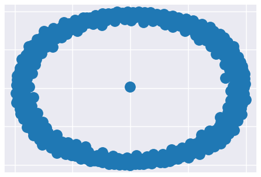
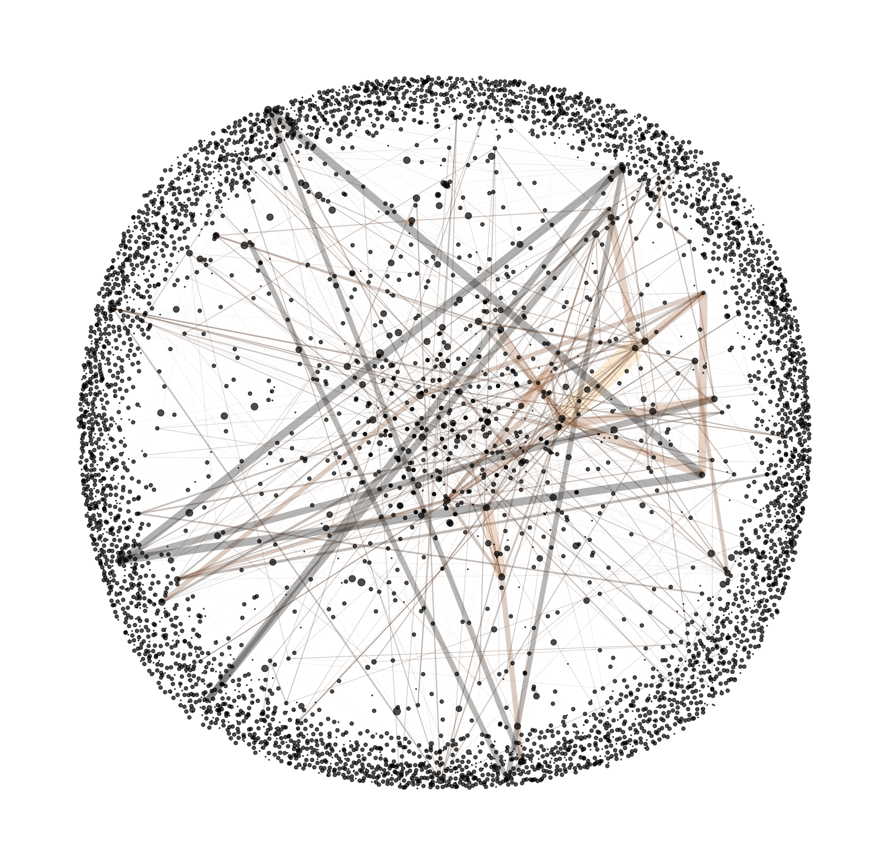
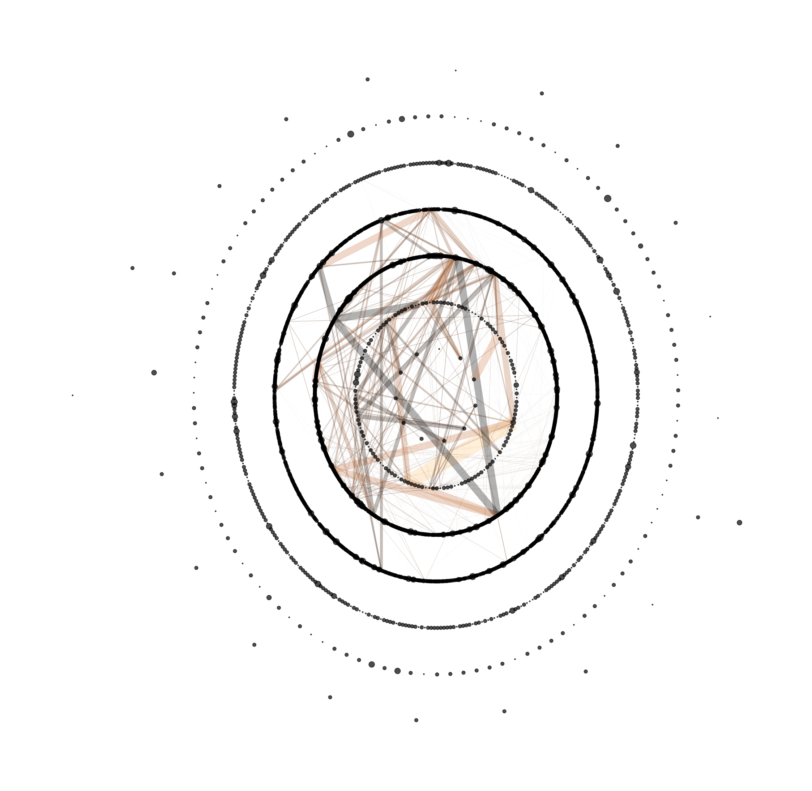
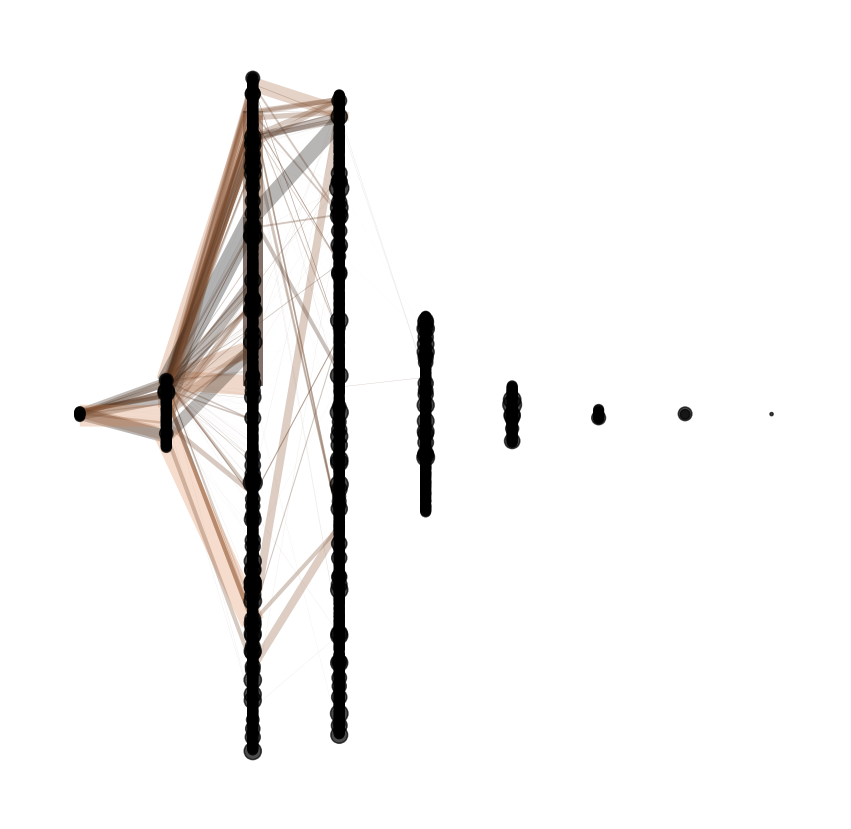
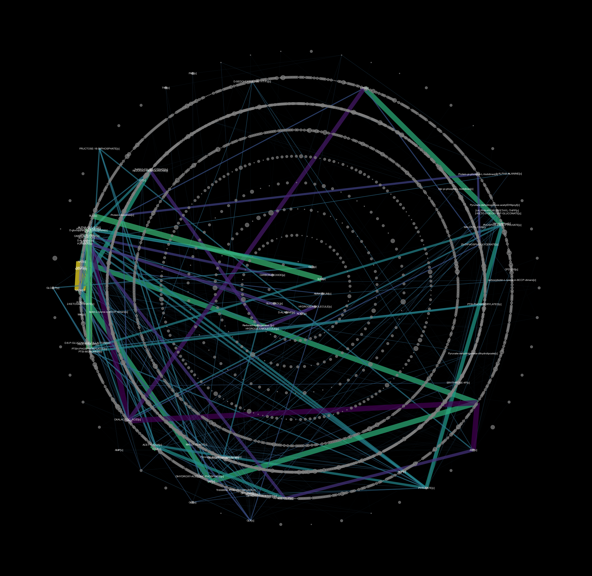
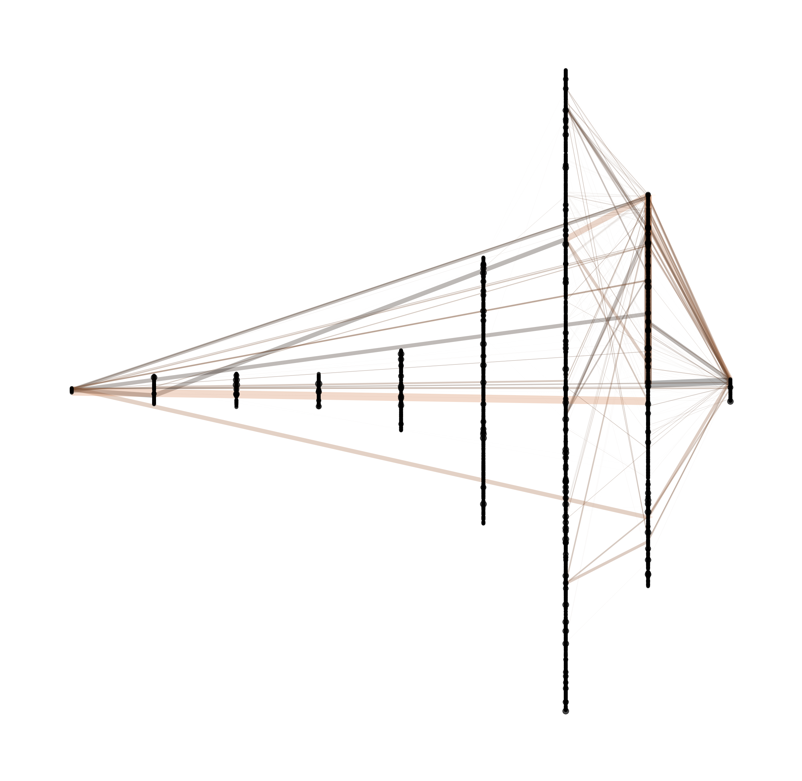

[40]:
import numpy as np
import seaborn as sns
import pandas as pd
import matplotlib.pyplot as plt
import networkx as nx
import pygraphviz
import os
import dill
from scipy.sparse import csr_matrix
from sklearn.preprocessing import MinMaxScaler, StandardScaler
sns.set(style='darkgrid', palette='viridis', context='talk')
os.chdir(os.path.expanduser('~/vivarium-ecoli'))
[41]:
%%html
<style>
.dataframe th {
font-size: 12px;
}
.dataframe td {
font-size: 10px;
}
</style>
[42]:
import datetime
[43]:
datetime.date.today()
[43]:
datetime.date(2023, 4, 6)
Import
[44]:
time = '10'
date = '2023-04-06'
experiment = 'fba-redux'
entry = f'{experiment}_{time}_{date}'
folder = f'out/fbagd/{entry}/'
[45]:
output = np.load(folder + 'output.npy',allow_pickle='TRUE').item()
# output = np.load(r"out/geneRxnVerifData/output_glc.npy", allow_pickle=True, encoding='ASCII').tolist()
output = output['agents']['0']
fba = output['listeners']['fba_results']
mass = output['listeners']['mass']
bulk = pd.DataFrame(output['bulk'])
[46]:
f = open(folder + 'agent_steps.pkl', 'rb')
agent = dill.load(f)
f.close()
[47]:
stoichiometry = agent['ecoli-metabolism-redux'].network_flow_model.Sd
# maintenance_reaction = agent['ecoli-metabolism'].model.maintenance_reaction
# stoichiometry["maintenance_reaction"] = maintenance_reaction
#
# bad_rxns = ["RXN-12440", "TRANS-RXN-121", "TRANS-RXN-300", "TRANS-RXN-8"] # generate carbon mistake in parca, efflux/influx proton gen
# for rxn in bad_rxns:
# stoichiometry.pop(rxn, None)
[48]:
stoichiometry
[48]:
| 1-ACYLGLYCEROL-3-P-ACYLTRANSFER-RXN | 1.1.1.127-RXN | 1.1.1.127-RXN (reverse) | 1.1.1.215-RXN (reverse) | 1.1.1.251-RXN | 1.1.1.251-RXN (reverse) | 1.1.1.271-RXN (reverse) | 1.1.1.274-RXN (reverse) | 1.1.1.283-RXN (reverse) | 1.1.1.39-RXN | ... | XYLISOM-RXN-CPD-15377//D-XYLULOSE.22. | XYLISOM-RXN-CPD-15377//D-XYLULOSE.22. (reverse) | XYLISOM-RXN-XYLOSE//D-XYLULOSE.19. | XYLISOM-RXN-XYLOSE//D-XYLULOSE.19. (reverse) | XYLONATE-DEHYDRATASE-RXN | XYLULOKIN-RXN | YIAE1-RXN (reverse) | YIAE2-RXN (reverse) | glycogen-monomer-extension | maintenance_reaction | |
|---|---|---|---|---|---|---|---|---|---|---|---|---|---|---|---|---|---|---|---|---|---|
| ACYL-SN-GLYCEROL-3P[c] | -1 | 0 | 0 | 0 | 0 | 0 | 0 | 0 | 0 | 0 | ... | 0 | 0 | 0 | 0 | 0 | 0 | 0 | 0 | 0 | 0 |
| ACYL-ACP[c] | -1 | 0 | 0 | 0 | 0 | 0 | 0 | 0 | 0 | 0 | ... | 0 | 0 | 0 | 0 | 0 | 0 | 0 | 0 | 0 | 0 |
| L-PHOSPHATIDATE[c] | 1 | 0 | 0 | 0 | 0 | 0 | 0 | 0 | 0 | 0 | ... | 0 | 0 | 0 | 0 | 0 | 0 | 0 | 0 | 0 | 0 |
| ACP[c] | 1 | 0 | 0 | 0 | 0 | 0 | 0 | 0 | 0 | 0 | ... | 0 | 0 | 0 | 0 | 0 | 0 | 0 | 0 | 0 | 0 |
| 2-DEHYDRO-3-DEOXY-D-GLUCONATE[c] | 0 | -1 | 1 | 0 | 0 | 0 | 0 | 0 | 0 | 0 | ... | 0 | 0 | 0 | 0 | 0 | 0 | 0 | 0 | 0 | 0 |
| ... | ... | ... | ... | ... | ... | ... | ... | ... | ... | ... | ... | ... | ... | ... | ... | ... | ... | ... | ... | ... | ... |
| CPD-9646[CCI-PERI-BAC-GN] | 0 | 0 | 0 | 0 | 0 | 0 | 0 | 0 | 0 | 0 | ... | 0 | 0 | 0 | 0 | 0 | 0 | 0 | 0 | 0 | 0 |
| URIDYLYL-PII[c] | 0 | 0 | 0 | 0 | 0 | 0 | 0 | 0 | 0 | 0 | ... | 0 | 0 | 0 | 0 | 0 | 0 | 0 | 0 | 0 | 0 |
| PROTEIN-PII[c] | 0 | 0 | 0 | 0 | 0 | 0 | 0 | 0 | 0 | 0 | ... | 0 | 0 | 0 | 0 | 0 | 0 | 0 | 0 | 0 | 0 |
| D-XYLULOSE[c] | 0 | 0 | 0 | 0 | 0 | 0 | 0 | 0 | 0 | 0 | ... | 1 | -1 | 1 | -1 | 0 | -1 | 0 | 0 | 0 | 0 |
| glycogen-monomer[c] | 0 | 0 | 0 | 0 | 0 | 0 | 0 | 0 | 0 | 0 | ... | 0 | 0 | 0 | 0 | 0 | 0 | 0 | 0 | 1 | 0 |
5314 rows × 7505 columns
[54]:
g = nx.algorithms.bipartite.from_biadjacency_matrix(A = csr_matrix(np.array(stoichiometry)[0:200,0:200]))
[55]:
g_view = nx.nx_agraph.graphviz_layout(g, prog="sfdp")
[56]:
nx.draw(g_view)
---------------------------------------------------------------------------
AttributeError Traceback (most recent call last)
/var/folders/dx/0239zgvj0tgf46b5h8l7v_fc0000gn/T/ipykernel_77877/4136701457.py in <module>
----> 1 nx.draw(g_view)
~/.pyenv/versions/3.9.9/envs/viv/lib/python3.9/site-packages/networkx/drawing/nx_pylab.py in draw(G, pos, ax, **kwds)
119 kwds["with_labels"] = "labels" in kwds
120
--> 121 draw_networkx(G, pos=pos, ax=ax, **kwds)
122 ax.set_axis_off()
123 plt.draw_if_interactive()
~/.pyenv/versions/3.9.9/envs/viv/lib/python3.9/site-packages/networkx/drawing/nx_pylab.py in draw_networkx(G, pos, arrows, with_labels, **kwds)
332
333 draw_networkx_nodes(G, pos, **node_kwds)
--> 334 draw_networkx_edges(G, pos, arrows=arrows, **edge_kwds)
335 if with_labels:
336 draw_networkx_labels(G, pos, **label_kwds)
~/.pyenv/versions/3.9.9/envs/viv/lib/python3.9/site-packages/networkx/drawing/nx_pylab.py in draw_networkx_edges(G, pos, edgelist, width, edge_color, style, alpha, arrowstyle, arrowsize, edge_cmap, edge_vmin, edge_vmax, ax, arrows, label, node_size, nodelist, node_shape, connectionstyle, min_source_margin, min_target_margin)
673 # for directed graphs.
674 # The `arrows` keyword can be used to override the default behavior
--> 675 use_linecollection = not G.is_directed()
676 if arrows in (True, False):
677 use_linecollection = not arrows
AttributeError: 'dict' object has no attribute 'is_directed'

[103]:
counter = 0
for i, reaction in enumerate(stoichiometry):
for j, reaction2 in enumerate(stoichiometry):
if reaction['stoichiometry'] == reaction2['stoichiometry'] and i!=j and i<j:
counter += 1
print(i, j)
24 2115
97 2269
120 121
139 140
139 141
140 141
152 1676
154 1677
161 165
174 175
174 2588
175 2588
176 178
176 2590
176 2647
176 2686
177 2278
178 2590
178 2647
178 2686
182 339
183 340
183 453
184 341
184 454
185 342
185 455
186 344
186 456
187 345
187 457
188 346
188 458
189 347
189 459
190 348
190 460
191 349
191 461
192 350
192 462
193 351
193 463
194 352
194 464
195 353
195 465
196 354
197 357
198 358
198 466
199 359
200 363
200 467
201 364
202 365
203 367
203 468
204 368
205 369
205 469
206 370
206 470
207 371
207 471
208 372
208 472
209 373
209 473
210 374
210 474
211 375
211 475
212 376
212 476
213 377
213 477
214 378
215 380
216 381
216 478
217 382
217 479
218 383
218 480
219 385
219 481
220 386
221 387
222 388
222 482
223 389
223 483
224 390
224 484
225 391
225 4855
226 392
226 485
228 4368
229 4369
230 4370
231 4371
232 4372
233 4373
234 4374
236 4375
239 4376
240 4377
244 245
246 1898
248 249
260 261
262 1773
287 288
293 4441
294 4440
300 305
311 336
340 453
341 454
342 455
344 456
345 457
346 458
347 459
348 460
349 461
350 462
351 463
352 464
353 465
358 466
363 467
367 468
369 469
370 470
371 471
372 472
373 473
374 474
375 475
376 476
377 477
381 478
382 479
383 480
385 481
388 482
389 483
390 484
391 4855
392 485
400 409
412 423
496 497
502 503
502 504
503 504
506 507
513 585
530 531
532 533
534 535
536 537
538 539
540 541
542 543
544 545
546 547
556 557
574 575
580 581
603 604
605 606
608 609
626 627
634 635
640 5668
662 663
674 675
674 676
675 676
697 1446
698 1450
699 1454
714 715
748 749
748 750
749 750
751 752
753 1499
754 1500
756 757
794 2844
795 2822
821 822
828 829
828 830
829 830
868 869
870 871
870 872
870 873
871 872
871 873
872 873
888 889
897 898
897 899
898 899
900 901
929 1447
930 1451
931 1455
932 933
960 961
960 1985
961 1985
962 963
962 1986
963 1986
964 965
966 967
968 969
970 971
972 973
979 980
979 981
979 982
979 983
979 984
980 981
980 982
980 983
980 984
981 982
981 983
981 984
982 983
982 984
983 984
991 992
993 994
1014 1015
1014 1016
1015 1016
1025 1026
1057 1059
1077 1078
1089 1090
1128 1129
1224 2959
1225 2561
1226 2741
1227 2562
1262 1263
1311 1312
1388 1389
1426 1430
1448 5632
1452 5633
1456 5634
1464 1465
1464 1466
1465 1466
1601 1602
1668 1669
1671 1672
1678 1679
1682 1683
1694 2114
1703 1704
1706 1707
1708 1709
1710 1711
1712 1713
1715 1716
1717 1718
1772 2606
1866 1867
1866 1868
1867 1868
1871 1872
1887 4410
1888 2456
2109 2209
2110 2206
2343 2344
2349 2350
2352 2353
2354 2355
2379 4427
2388 4477
2420 2421
2453 2460
2515 4678
2516 4778
2590 2647
2590 2686
2593 2594
2604 2605
2609 2610
2647 2686
2648 2649
2648 2650
2649 2650
2675 2676
2677 2678
2730 2731
2767 2768
2767 2769
2767 2770
2768 2769
2768 2770
2769 2770
2925 2926
2932 2941
2951 2952
2970 5011
2971 5010
2982 4256
3004 3628
3018 3362
3035 3190
3035 3453
3037 3191
3038 3192
3041 3193
3043 3194
3044 3195
3045 3196
3046 3197
3051 3198
3052 3199
3055 3200
3059 3201
3065 3202
3067 3203
3070 3204
3072 3205
3072 3634
3073 3206
3074 3207
3086 3208
3087 3209
3112 3210
3123 3211
3141 3212
3142 3213
3143 3214
3144 3215
3148 3216
3149 3217
3150 3218
3151 3219
3164 3220
3166 3221
3170 3222
3171 3223
3172 3224
3173 3225
3174 3226
3175 3227
3176 3228
3177 3229
3178 3230
3179 3231
3180 3232
3181 3233
3182 3234
3183 3235
3190 3453
3205 3634
3308 3414
3309 3416
3312 3889
3317 3785
3317 5225
3326 5387
3335 5239
3345 3642
3349 3928
3354 3933
3359 3477
3360 5338
3384 3653
3386 3948
3390 5507
3400 5525
3401 3954
3402 3450
3403 3814
3404 3452
3406 3816
3407 3821
3409 3958
3417 3826
3419 3780
3426 3540
3435 3770
3438 3755
3442 3812
3443 3757
3445 3772
3457 3625
3458 3626
3467 5235
3474 3575
3510 3614
3519 3885
3520 3886
3521 3887
3522 3888
3524 3890
3526 3892
3529 3893
3530 3894
3531 3895
3532 3896
3533 3897
3534 3898
3535 3899
3536 3900
3539 3901
3541 3903
3542 3904
3543 3905
3544 3906
3545 3907
3546 3908
3548 3909
3551 3910
3552 3911
3553 3912
3554 3913
3555 3914
3556 3915
3557 3916
3560 5315
3561 3918
3562 3920
3563 5247
3565 3921
3567 5316
3570 5317
3571 5318
3577 3935
3578 3936
3579 3937
3580 5319
3589 5320
3590 3938
3591 3939
3595 3756
3598 5321
3599 3940
3600 5322
3601 3942
3602 3944
3603 3945
3604 5323
3605 3946
3606 5324
3608 3949
3609 3950
3613 5325
3618 3956
3619 5326
3620 5327
3622 5328
3623 3959
3627 3830
3627 5231
3692 3728
3771 5306
3773 5308
3774 5354
3785 5225
3787 5160
3805 5420
3830 5231
4031 4066
4032 4070
4064 4681
4075 4076
4081 4082
4134 4135
4138 4139
4145 4146
4151 4176
4188 4223
4197 5040
4210 4224
4211 4225
4212 4226
4214 4227
4215 4228
4217 4229
4220 4230
4221 4231
4222 4463
4240 5023
4241 5020
4244 5019
4265 5048
4272 4280
4282 4290
4283 5104
4285 5105
4286 5106
4288 5107
4292 4299
4305 4313
4329 4345
4354 4359
4405 4414
4419 4755
4419 5014
4420 4779
4420 5005
4445 4456
4467 4476
4480 4485
4496 4614
4577 4602
4755 5014
4779 5005
4821 5070
4847 4856
4908 5057
4914 5016
4992 4997
5018 5052
5090 5097
5223 5370
5249 5407
5250 5410
5254 5411
5262 5427
5276 5465
5290 5527
5294 5531
5297 5538
5348 5502
5605 5606
5615 5616
5639 5640
5652 5653
Plotting
[104]:
stoichiometry[43]
[104]:
{'reaction id': '1.8.4.14-RXN-MET/Ox-thioredoxins-1/WATER//CPD-8990/Red-thioredoxins-1.57. (reverse)',
'stoichiometry': {'MET[c]': 1,
'Ox-thioredoxins-1[c]': 1,
'WATER[c]': 1,
'CPD-8990[c]': -1,
'Red-thioredoxins-1[c]': -1},
'is reversible': False,
'enzyme': ['EG12394-MONOMER[c]', 'CPLX0-8217[c]']}
[105]:
for i, reaction in enumerate(stoichiometry):
if len(reaction['enzyme']) > 1:
print(i)
9
38
39
40
41
42
43
44
45
53
54
55
56
57
67
68
94
107
109
115
116
117
118
119
130
131
132
133
134
136
172
175
177
182
183
184
185
186
187
188
189
190
191
192
193
194
195
196
197
198
199
200
201
202
203
204
205
206
207
208
209
210
211
212
213
214
215
216
217
218
219
220
221
222
223
224
225
226
250
251
252
253
257
260
262
269
270
271
272
273
274
275
276
277
278
279
280
281
282
283
284
285
286
310
397
430
433
450
451
452
453
454
455
456
457
458
459
460
461
462
463
464
465
466
467
468
469
470
471
472
473
474
475
476
477
478
479
480
481
482
483
484
485
496
499
500
506
509
512
520
521
523
524
556
573
574
576
577
578
579
607
608
610
611
612
634
639
640
662
668
670
671
672
695
696
697
698
699
734
763
765
779
815
823
824
846
847
848
849
850
851
852
853
854
855
856
857
858
867
897
900
921
927
928
929
930
931
951
960
962
964
972
979
993
1017
1018
1039
1058
1060
1063
1064
1072
1077
1102
1103
1104
1105
1106
1120
1127
1141
1146
1198
1224
1225
1226
1227
1248
1249
1250
1251
1252
1253
1254
1255
1256
1257
1258
1259
1260
1264
1265
1269
1283
1285
1286
1295
1296
1297
1298
1299
1300
1301
1302
1364
1365
1366
1368
1369
1370
1371
1379
1426
1427
1428
1429
1444
1445
1446
1447
1448
1449
1450
1451
1452
1453
1454
1455
1456
1459
1463
1485
1521
1547
1548
1583
1589
1594
1595
1598
1599
1600
1603
1604
1638
1653
1654
1667
1668
1670
1671
1673
1682
1699
1703
1708
1710
1717
1721
1723
1724
1725
1732
1733
1755
1756
1779
1791
1863
1866
1870
1885
1888
1903
1904
1933
1934
1935
1936
1952
1967
1979
1980
1981
1982
1983
1984
1985
1986
1991
2002
2041
2043
2044
2045
2047
2048
2049
2052
2053
2054
2056
2057
2058
2060
2061
2062
2064
2065
2066
2069
2079
2080
2081
2139
2140
2142
2143
2144
2145
2146
2147
2190
2191
2228
2229
2238
2239
2240
2241
2331
2343
2351
2352
2359
2362
2366
2401
2408
2410
2412
2413
2415
2417
2419
2423
2424
2435
2436
2453
2454
2455
2456
2457
2458
2459
2460
2463
2466
2467
2468
2474
2477
2491
2492
2500
2515
2516
2539
2540
2544
2561
2562
2565
2577
2583
2588
2596
2597
2600
2602
2606
2621
2622
2638
2654
2666
2675
2687
2694
2714
2715
2724
2727
2728
2732
2734
2737
2741
2742
2749
2753
2755
2767
2771
2772
2773
2774
2800
2914
2924
2958
2959
2963
2969
2995
2996
2997
2998
2999
3000
3001
3002
3003
3004
3005
3006
3007
3008
3009
3010
3011
3012
3013
3014
3015
3016
3017
3018
3019
3020
3021
3022
3023
3024
3025
3026
3027
3028
3029
3030
3031
3032
3033
3034
3035
3036
3037
3038
3039
3040
3041
3042
3043
3044
3045
3046
3047
3048
3049
3050
3051
3052
3053
3054
3055
3056
3057
3058
3059
3060
3061
3062
3063
3064
3065
3066
3067
3068
3069
3070
3071
3072
3073
3074
3075
3076
3077
3078
3079
3080
3081
3082
3083
3084
3085
3086
3087
3088
3089
3090
3091
3092
3093
3094
3095
3096
3097
3098
3099
3100
3101
3102
3103
3104
3105
3106
3107
3108
3109
3110
3111
3112
3113
3114
3115
3116
3117
3118
3119
3120
3121
3122
3123
3124
3125
3126
3127
3128
3129
3130
3131
3132
3133
3134
3135
3136
3137
3138
3139
3140
3141
3142
3143
3144
3145
3146
3147
3148
3149
3150
3151
3152
3153
3154
3155
3156
3157
3158
3159
3160
3161
3162
3163
3164
3165
3166
3167
3168
3169
3170
3171
3172
3173
3174
3175
3176
3177
3178
3179
3180
3181
3182
3183
3184
3185
3186
3187
3188
3189
3190
3191
3192
3193
3194
3195
3196
3197
3198
3199
3200
3201
3202
3203
3204
3205
3206
3207
3208
3209
3210
3211
3212
3213
3214
3215
3216
3217
3218
3219
3220
3221
3222
3223
3224
3225
3226
3227
3228
3229
3230
3231
3232
3233
3234
3235
3236
3237
3238
3239
3240
3241
3242
3243
3244
3245
3246
3247
3248
3249
3250
3251
3252
3253
3254
3255
3256
3257
3258
3259
3260
3261
3262
3263
3264
3265
3266
3267
3268
3269
3270
3271
3272
3273
3274
3275
3276
3277
3278
3279
3280
3281
3282
3283
3284
3285
3286
3287
3288
3289
3290
3291
3292
3293
3294
3295
3296
3297
3303
3304
3305
3306
3307
3308
3309
3310
3311
3312
3313
3314
3315
3316
3317
3318
3319
3320
3321
3322
3323
3324
3325
3326
3327
3328
3329
3330
3331
3332
3333
3334
3335
3336
3337
3338
3339
3340
3341
3342
3343
3344
3345
3346
3347
3348
3349
3350
3351
3352
3353
3354
3355
3356
3357
3358
3359
3360
3361
3362
3363
3364
3365
3366
3367
3368
3369
3370
3371
3372
3373
3374
3375
3376
3377
3378
3379
3380
3381
3382
3383
3384
3385
3386
3387
3388
3389
3390
3391
3392
3393
3394
3395
3396
3397
3398
3399
3400
3401
3402
3403
3404
3405
3406
3407
3408
3409
3410
3411
3412
3413
3414
3415
3416
3417
3418
3419
3420
3421
3422
3423
3424
3425
3426
3427
3428
3429
3430
3431
3432
3433
3434
3435
3436
3437
3438
3439
3440
3441
3442
3443
3444
3445
3446
3447
3448
3449
3450
3451
3452
3453
3454
3455
3456
3457
3458
3459
3460
3461
3462
3463
3464
3465
3466
3467
3468
3469
3470
3471
3472
3473
3474
3475
3476
3477
3478
3479
3480
3481
3482
3483
3484
3485
3486
3487
3488
3489
3490
3491
3492
3493
3494
3495
3496
3497
3498
3499
3500
3501
3502
3503
3504
3505
3506
3507
3508
3509
3510
3511
3512
3513
3514
3515
3516
3517
3518
3519
3520
3521
3522
3523
3524
3525
3526
3527
3528
3529
3530
3531
3532
3533
3534
3535
3536
3537
3538
3539
3540
3541
3542
3543
3544
3545
3546
3547
3548
3549
3550
3551
3552
3553
3554
3555
3556
3557
3558
3559
3560
3561
3562
3563
3564
3565
3566
3567
3568
3569
3570
3571
3572
3573
3574
3575
3576
3577
3578
3579
3580
3581
3582
3583
3584
3585
3586
3587
3588
3589
3590
3591
3592
3593
3594
3595
3596
3597
3598
3599
3600
3601
3602
3603
3604
3605
3606
3607
3608
3609
3610
3611
3612
3613
3614
3615
3616
3617
3618
3619
3620
3621
3622
3623
3624
3625
3626
3627
3628
3629
3630
3631
3632
3633
3634
3635
3636
3637
3638
3639
3640
3641
3642
3643
3644
3645
3646
3647
3648
3649
3650
3651
3652
3653
3654
3655
3656
3657
3658
3659
3660
3661
3662
3663
3664
3665
3666
3667
3668
3669
3670
3671
3672
3673
3674
3675
3676
3677
3678
3679
3680
3681
3682
3744
3745
3747
3748
3749
3750
3751
3752
3753
3754
3755
3756
3757
3758
3759
3760
3761
3762
3763
3764
3765
3766
3767
3768
3769
3770
3771
3772
3773
3774
3775
3776
3777
3778
3779
3780
3781
3782
3783
3784
3785
3786
3787
3788
3789
3790
3791
3792
3793
3794
3795
3796
3797
3798
3799
3800
3801
3802
3803
3804
3805
3806
3807
3808
3809
3810
3811
3812
3813
3814
3815
3816
3817
3818
3819
3820
3821
3822
3823
3824
3825
3826
3827
3828
3829
3830
3831
3832
3833
3834
3835
3836
3837
3838
3839
3840
3841
3842
3843
3844
3845
3846
3847
3848
3849
3850
3851
3852
3853
3854
3855
3856
3857
3858
3859
3860
3861
3862
3863
3864
3865
3866
3867
3868
3869
3870
3871
3872
3873
3874
3875
3876
3877
3878
3879
3880
3881
3882
3883
3884
3885
3886
3887
3888
3889
3890
3891
3892
3893
3894
3895
3896
3897
3898
3899
3900
3901
3902
3903
3904
3905
3906
3907
3908
3909
3910
3911
3912
3913
3914
3915
3916
3917
3918
3919
3920
3921
3922
3923
3924
3925
3926
3927
3928
3929
3930
3931
3932
3933
3934
3935
3936
3937
3938
3939
3940
3941
3942
3943
3944
3945
3946
3947
3948
3949
3950
3951
3952
3953
3954
3955
3956
3957
3958
3959
3960
3961
3963
3965
3970
3971
3972
3973
3994
4064
4083
4084
4089
4099
4100
4106
4108
4137
4145
4147
4150
4178
4179
4180
4181
4182
4183
4223
4224
4225
4226
4227
4228
4229
4230
4231
4236
4240
4244
4254
4257
4258
4261
4267
4268
4269
4271
4272
4273
4274
4275
4276
4277
4278
4279
4280
4281
4315
4316
4317
4318
4319
4320
4321
4322
4323
4324
4326
4403
4418
4419
4420
4427
4442
4444
4463
4465
4510
4512
4513
4516
4522
4524
4543
4544
4545
4546
4547
4548
4549
4550
4551
4552
4553
4554
4555
4556
4557
4558
4559
4560
4561
4562
4563
4564
4565
4566
4567
4568
4569
4570
4571
4572
4573
4607
4609
4610
4611
4612
4613
4614
4615
4616
4623
4624
4626
4627
4630
4633
4638
4641
4644
4645
4648
4666
4849
4850
4851
4852
4853
4854
4855
4856
4857
4872
4873
4874
4875
4876
4877
4878
4879
4880
4881
4882
4883
4884
4885
4886
4887
4888
4889
4890
4891
4892
4893
4894
4895
4896
4897
4898
4899
4900
4901
4902
4903
4904
4905
4906
4909
4973
4974
4977
4979
4983
5005
5014
5015
5028
5039
5040
5050
5052
5062
5070
5101
5121
5134
5135
5136
5146
5147
5148
5149
5150
5151
5152
5153
5154
5155
5156
5157
5158
5159
5160
5161
5162
5163
5164
5165
5166
5167
5168
5169
5170
5171
5172
5173
5174
5175
5176
5177
5178
5179
5180
5181
5182
5183
5184
5185
5186
5187
5188
5189
5190
5191
5192
5193
5194
5195
5196
5197
5198
5199
5200
5201
5202
5203
5204
5205
5206
5207
5208
5209
5210
5211
5212
5213
5214
5215
5216
5217
5218
5219
5220
5221
5222
5223
5224
5225
5226
5227
5228
5229
5230
5231
5232
5233
5234
5235
5236
5237
5238
5239
5240
5241
5242
5243
5244
5245
5246
5247
5248
5249
5250
5251
5252
5253
5254
5255
5256
5257
5258
5259
5260
5261
5262
5263
5264
5265
5266
5267
5268
5269
5270
5271
5272
5273
5274
5275
5276
5277
5278
5279
5280
5281
5282
5283
5284
5285
5286
5287
5288
5289
5290
5291
5292
5293
5294
5295
5296
5297
5298
5299
5300
5301
5302
5303
5304
5305
5306
5307
5308
5309
5310
5311
5312
5313
5314
5315
5316
5317
5318
5319
5320
5321
5322
5323
5324
5325
5326
5327
5328
5329
5330
5331
5332
5333
5334
5335
5336
5337
5338
5339
5340
5341
5342
5343
5344
5345
5346
5347
5348
5349
5350
5351
5352
5353
5354
5355
5358
5359
5360
5361
5362
5363
5364
5365
5366
5367
5368
5369
5370
5371
5372
5373
5374
5375
5376
5377
5378
5379
5380
5381
5382
5383
5384
5385
5386
5387
5388
5389
5390
5391
5392
5393
5394
5395
5396
5397
5398
5399
5400
5401
5402
5403
5404
5405
5406
5407
5408
5409
5410
5411
5412
5413
5414
5415
5416
5417
5418
5419
5420
5421
5422
5423
5424
5425
5426
5427
5428
5429
5430
5431
5432
5433
5434
5435
5436
5437
5438
5439
5440
5441
5442
5443
5444
5445
5446
5447
5448
5449
5450
5451
5452
5453
5454
5455
5456
5457
5458
5459
5460
5461
5462
5463
5464
5465
5466
5467
5468
5469
5470
5471
5472
5473
5474
5475
5476
5477
5478
5479
5480
5481
5482
5483
5484
5485
5486
5487
5488
5489
5490
5491
5492
5493
5494
5495
5496
5497
5498
5499
5500
5501
5502
5503
5504
5505
5506
5507
5508
5509
5510
5511
5512
5513
5514
5515
5516
5517
5518
5519
5520
5521
5522
5523
5524
5525
5526
5527
5528
5529
5530
5531
5532
5533
5534
5535
5536
5537
5538
5539
5540
5541
5542
5543
5544
5545
5546
5547
5548
5549
5550
5551
5552
5553
5554
5555
5556
5562
5563
5564
5565
5566
5567
5568
5569
5570
5571
5579
5615
5625
5631
5632
5633
5634
5644
5652
5655
5658
5663
[106]:
bulk_data = bulk.iloc[-1, :]
bulk_data
[106]:
CPLX-125[c] 7
CPLX-172[c] 0
CPLX0-226[c] 103
CPLX0-228[c] 9
CPLX0-7669[c] 116
...
undecaprenyl[m] 0
undecaprenyl[o] 0
undecaprenyl[p] 0
undecaprenyl[l] 0
undecaprenyl[i] 0
Name: 5, Length: 40889, dtype: int64
[107]:
min(flux_data)
[107]:
-1.0
[108]:
flux_data = pd.DataFrame(fba['estimated_fluxes']).iloc[-1, :]
[109]:
# scaler = StandardScaler()
# flux_values = scaler.fit_transform(np.array(flux_data).reshape(-1, 1)).reshape(-1)
scaler = MinMaxScaler(feature_range=(-1, max(flux_data)/(abs(min(flux_data)))))
flux_values = scaler.fit_transform(np.array(flux_data).reshape(-1, 1)).reshape(-1)
flux_data.iloc[:] = flux_values.tolist()
flux_data
[109]:
1-ACYLGLYCEROL-3-P-ACYLTRANSFER-RXN 8.185725e-06
1.1.1.127-RXN 4.815133e-07
1.1.1.215-RXN (reverse) -1.110223e-16
1.1.1.251-RXN 2.335339e-05
1.1.1.271-RXN (reverse) 3.129836e-06
...
XYLULOKIN-RXN -1.110223e-16
YIAE1-RXN (reverse) -1.110223e-16
YIAE2-RXN (reverse) -1.110223e-16
glycogen-monomer-extension 2.305245e-03
maintenance_reaction 1.837728e+00
Name: 4, Length: 5669, dtype: float64
[110]:
cofactors = [
'PROTON[c]',
'WATER[c]',
'OXYGEN-MOLECULE[c]',
'PROTON[p]',
'WATER[p]',
'Pi[c]',
'PPI[c]',
'Pi[p]']
[113]:
G = nx.Graph()
for reaction in stoichiometry:
for metabolite in list(reaction['stoichiometry'].keys()):
if metabolite in bulk_data.index:
G.add_node(metabolite, size=20*np.log(100+abs(bulk_data[metabolite])))
else:
G.add_node(metabolite, size=10)
for reactant in list(reaction['stoichiometry'].keys()):
if reaction['stoichiometry'][reactant] < 0:
for product in list(reaction['stoichiometry'].keys()):
if reaction['stoichiometry'][product] > 0:
if G.has_edge(reactant, product):
G.edges[reactant, product]['weight'] += 20*flux_data[reaction['reaction id']]
else:
G.add_edge(reactant, product, weight=20*flux_data[reaction['reaction id']])
# prune smaller graphs away
for subgraph in [G.subgraph(c) for c in nx.connected_components(G)]:
if subgraph.size() < 100:
print(subgraph.nodes())
# G.remove_nodes_from(subgraph.nodes())
# remove highly connected nodes (e.g. protons)
highly_connected_nodes = list()
for node in G.nodes():
if G.degree(node) > 50:
highly_connected_nodes.append(node)
# G.remove_nodes_from(highly_connected_nodes)
G.remove_nodes_from(cofactors)
['PHOSPHO-ARCB-HIS[CCI-PM-BAC-NEG-GN]', 'PHOSPHO-ARCB717[CCI-PM-BAC-NEG-GN]', 'Pi[NIL]', 'ARCB-CPLX[CCI-PM-BAC-NEG-GN]', 'PHOSPHO-ARCB-ASP[CCI-PM-BAC-NEG-GN]']
['PHOSPHO-BAER[c]', 'BAER-MONOMER[c]', 'BAES-MONOMER[CCI-PM-BAC-NEG-GN]', 'PHOSPHO-BAES[CCI-PM-BAC-NEG-GN]']
['WATER[CCI-PERI-BAC-GN]', 'CPD-18901[CCI-PERI-BAC-GN]', 'CPD-606[CCI-PERI-BAC-GN]', 'FAD[CCI-PERI-BAC-GN]', 'CPD-6746[CCI-PERI-BAC-GN]', 'GTP[CCI-PERI-BAC-GN]', 'Protein-flavinated-threonines[CCI-PERI-BAC-GN]', 'Proteins-L-Threonines[CCI-PERI-BAC-GN]', 'CPD-9646[CCI-PERI-BAC-GN]', 'UNDECAPRENYL-DIPHOSPHATE[CCI-PERI-BAC-GN]', 'GDP[CCI-PERI-BAC-GN]', 'ADP[CCI-PERI-BAC-GN]', 'D-ALANINE[CCI-PERI-BAC-GN]', 'PROTON[CCI-PERI-BAC-GN]', 'CPD-18902[CCI-PERI-BAC-GN]', 'GLYCEROL-3P[CCI-PERI-BAC-GN]', 'CPD-18903[CCI-PERI-BAC-GN]', 'Pi[CCI-PERI-BAC-GN]', 'MI-PENTAKISPHOSPHATE[CCI-PERI-BAC-GN]', 'CPD-17927[CCI-PERI-BAC-GN]', 'CYTIDINE[CCI-PERI-BAC-GN]', 'ADENOSINE5TRIPHOSPHO5ADENOSINE[CCI-PERI-BAC-GN]', 'CPD-17926[CCI-PERI-BAC-GN]', 'AMP[CCI-PERI-BAC-GN]']
['DNA-thymidines[c]', 'DNA-Cytidines[c]', 'CPD-11643[c]', 'CPD-20735[c]', 'CPD-20742[c]', 'DNA-deoxycytidine-dimer[c]', 'CPD-22519[c]', 'DNA-thymidine-dimer[c]', 'CPD0-2673[c]', 'Light[c]', 'CPD-20741[c]', 'DNA-deoxycytidine-thymidine-dimer[c]']
['CPD-8624[c]', 'CPD-8625[c]']
['CPD-8624[p]', 'CPD-8625[p]']
['PHOP-MONOMER[c]', 'PHOSPHO-PHOQ[CCI-PM-BAC-NEG-GN]', 'CPLX0-8168[CCO-PM-BAC-ACT]', 'PHOSPHO-PHOP[c]']
['16S-rRNA-pseudouridine516[c]', '16S-rRNA-uridine516[c]']
['23S-rRNA-uridine2457[c]', '23S-rRNA-pseudouridine2457[c]']
['23S-rRNA-uridine2604[c]', '23S-rRNA-pseudouridine2604[c]']
['23S-rRNA-uridine2605[c]', '23S-rRNA-pseudouridine2605[c]']
['23S-rRNA-pseudouridine1911-1915-1917[c]', '23S-rRNA-uridine1911-1915-1917[c]']
['23S-rRNA-uridine955-2504-2580[c]', '23S-rRNA-pseudouridine955-2504-2580[c]']
['tRNA-pseudouridine55[c]', 'tRNA-uridine55[c]']
['tRNA-pseudouridine65[c]', 'tRNA-uridine65[c]']
['tRNA-pseudouridine13[c]', 'tRNA-uridine13[c]']
['23S-rRNA-uridine746[c]', '23S-rRNA-pseudouridine746[c]']
['L-RHAMNOFURANOSE[c]', 'L-rhamnopyranose[c]']
['CPD-12849[c]', 'CPD-185[c]', '4-OXALOMESACONATE[c]']
['D-tagatofuranose[c]', 'TAGATOSE[c]']
['CPD-15616[c]', 'CPD-9569[c]']
['CPD-15762[c]', 'CPD-15761[c]', 'D-altropyranoses[c]', 'ALTROSE[c]']
['CPD-17986[CCI-PERI-BAC-GN]', 'CPD-18808[CCI-PERI-BAC-GN]', 'CPD-18807[CCI-PERI-BAC-GN]']
['GLUTATHIONE[CCI-PERI-BAC-GN]', 'CPD-19395[CCI-PERI-BAC-GN]', 'CPD-9385[CCI-PERI-BAC-GN]', 'CYS-GLY[CCI-PERI-BAC-GN]', '4-NITROANILINE[CCI-PERI-BAC-GN]', 'GLYCYLGLYCINE[CCI-PERI-BAC-GN]']
['CPD0-1118[m]', 'UBIQUINONE-8[m]', 'DEMETHYLMENAQUINONE[m]', 'Oxidized-Disulfide-Carrier-Proteins[CCO-OUT]', 'a--reduced-DsbB-protein[m]', 'CPD-12115[m]', 'Reduced-Disulfide-Carrier-Proteins[CCO-OUT]', 'MONOMER0-4439[m]', 'CPD-9956[m]', 'CPD-9728[m]', 'MONOMER0-4152[CCO-OUT]', 'MONOMER0-4142[m]', 'an-oxidized-DsbB-protein[m]', 'MONOMER0-4438[CCO-OUT]', 'CPD0-2061[m]', 'REDUCED-MENAQUINONE[m]']
['Reduced-Disulfide-Isomerases[CCI-PERI-BAC-GN]', 'Disulfide-Isomerase-with-Disulfide-Bond[CCI-PERI-BAC-GN]', 'a-reduced-DsbD-protein[CCI-PERI-BAC-GN]', 'an-oxidized-DsbD-protein[CCI-PERI-BAC-GN]']
['PROTEIN-S-HYDROXY-CYSTEINE[CCI-PERI-BAC-GN]', 'PROT-CYS[CCI-PERI-BAC-GN]']
['an-oxidized-DsbD-protein[m]', 'Oxidized-CcmG-Proteins[CCO-OUT]', 'Red-Thioredoxin[CCO-IN]', 'Red-thioredoxins-1[CCO-IN]', 'Oxidized-CcmH-Proteins[CCO-IN]', 'a-reduced-DsbD-protein[m]', 'Reduced-CcmH-Proteins[CCO-IN]', 'Reduced-CcmG-Proteins[CCO-IN]', 'Ox-Thioredoxin[CCO-IN]', 'Reduced-CcmG-Proteins[CCO-OUT]', 'Oxidized-CcmG-Proteins[CCO-IN]', 'Ox-thioredoxins-1[CCO-IN]']
['CPD-22116[c]', 'D-Ala-DltC[c]', 'D-alanine-carrier-protein[c]', 'CPD-22115[c]']
['CPD0-1281[p]', 'CPD-12817[p]', 'CPD-22538[p]', 'LIPID-IV-A[p]']
['Acceptor[m]', 'CcmCDE-Complex-Heme[CCO-OUT]', 'CcmCDE-Complex[m]', 'PROTOHEME[CCO-IN]', 'PROTON[CCO-IN]', 'Donor-H1[m]', 'PROTON[CCO-OUT]']
['Inactive-Der-GTPAses[c]', 'Der-GTPase[c]']
['Long-Chain-Fatty-Acids[e]', 'Long-Chain-Fatty-Acids[p]']
['CPD-19659[p]', 'CPD-19659[e]']
['CPD0-1283[c]', 'CPD-17523[c]', 'HEPTA-ACYLATED-LIPID-A[c]', '2-Acylglycero-Phosphocholines[c]']
['ALLOSE[c]', 'MONOMER0-2482[c]', 'G7821-MONOMER[c]']
['EG12658-MONOMER[CCI-PM-BAC-NEG-GN]', 'G7575-MONOMER[c]', 'MONOMER0-2741[c]', 'MONOMER0-4171[CCI-PM-BAC-NEG-GN]']
['GlcNAc-1-6-anhydro-MurNAc-pentapeptide[CCI-PERI-BAC-GN]', 'Peptidoglycan-dimer[CCI-PERI-BAC-GN]', 'NAcMur-Peptide-NAcGlc-Undecaprenols[CCI-PERI-BAC-GN]']
['Peptidoglycan-dimer[c]', 'GlcNAc-1-6-anhydro-MurNAc-pentapeptide[c]', 'NAcMur-Peptide-NAcGlc-Undecaprenols[c]']
['Peptidoglycan-dimer[p]', 'GlcNAc-1-6-anhydro-MurNAc-pentapeptide[p]', 'NAcMur-Peptide-NAcGlc-Undecaprenols[p]']
['EG11171-MONOMER[c]', 'CPD0-1719[c]']
['MONOMER0-4185[CCI-PM-BAC-NEG-GN]', 'PHOSPHO-EVGS[CCI-PM-BAC-NEG-GN]', 'MONOMER0-4184[CCI-PM-BAC-NEG-GN]']
['PHOSPHO-UHPB[c]', 'CPLX0-7754[c]', 'UHPA-MONOMER[c]', 'UHPB-MONOMER[c]']
['CPD-355[p]', 'CPD-355[e]', 'CPD-355[c]']
['CPD-3609[c]', 'CPD-3609[e]', 'CPD-3609[p]']
['CPD-369[p]', 'CPD-369[e]', 'CPD-369[c]']
['CPD0-1114[p]', 'CPD0-1114[c]', 'CPD0-1114[e]']
['CPD0-2460[e]', 'CPD0-2460[c]', 'CPD0-2460[p]']
['ERYTHRITOL[e]', 'ERYTHRITOL[c]', 'ERYTHRITOL[p]']
['L-ARABITOL[e]', 'L-ARABITOL[p]', 'L-ARABITOL[c]']
['RIBITOL[c]', 'RIBITOL[e]', 'RIBITOL[p]']
['XYLITOL[c]', 'XYLITOL[p]', 'XYLITOL[e]']
['Nucleotides[p]', 'Nucleotides[e]']
['2-PHOSPHO-4-CYTIDINE-5-DIPHOSPHO-2-C-MET[p]', '2-PHOSPHO-4-CYTIDINE-5-DIPHOSPHO-2-C-MET[e]']
['3-5-ADP[p]', '3-5-ADP[e]']
['4-CYTIDINE-5-DIPHOSPHO-2-C[p]', '4-CYTIDINE-5-DIPHOSPHO-2-C[e]']
['5-BETA-L-THREO-PENTAPYRANOSYL-4-ULOSE-[e]', '5-BETA-L-THREO-PENTAPYRANOSYL-4-ULOSE-[p]']
['5-HYDROXY-CTP[e]', '5-HYDROXY-CTP[p]']
['8-HYDROXYDEOXYGUANOSINE-5-TRIPHOSPHAT[p]', '8-HYDROXYDEOXYGUANOSINE-5-TRIPHOSPHAT[e]']
['ADENOSINE_DIPHOSPHATE_RIBOSE[e]', 'ADENOSINE_DIPHOSPHATE_RIBOSE[p]']
['ADENYLOSUCC[p]', 'ADENYLOSUCC[e]']
['ADP-D-GLUCOSE[p]', 'ADP-D-GLUCOSE[e]']
['ADP-D-GLYCERO-D-MANNO-HEPTOSE[p]', 'ADP-D-GLYCERO-D-MANNO-HEPTOSE[e]']
['ADP-L-GLYCERO-D-MANNO-HEPTOSE[e]', 'ADP-L-GLYCERO-D-MANNO-HEPTOSE[p]']
['ADP-MANNOSE[e]', 'ADP-MANNOSE[p]']
['AMP-LYSINE[e]', 'AMP-LYSINE[p]']
['ATP[e]', 'ATP[p]']
['C-DI-GMP[p]', 'C-DI-GMP[e]']
['C3[e]', 'C3[p]']
['CDP-CHOLINE[e]', 'CDP-CHOLINE[p]']
['CDP-D-GLUCOSE[p]', 'CDP-D-GLUCOSE[e]']
['CDP-ETHANOLAMINE[e]', 'CDP-ETHANOLAMINE[p]']
['CDP[p]', 'CDP[e]']
['CGMP[p]', 'CGMP[e]']
['CMP-KDO[p]', 'CMP-KDO[e]']
['CPD-1094[e]', 'CPD-1094[p]']
['CPD-11209[p]', 'CPD-11209[e]']
['CPD-11592[p]', 'CPD-11592[e]']
['CPD-11643[p]', 'CPD-11643[e]']
['CPD-12575[e]', 'CPD-12575[p]']
['CPD-13118[p]', 'CPD-13118[e]']
['CPD-13851[p]', 'CPD-13851[e]']
['CPD-13852[p]', 'CPD-13852[e]']
['CPD-14021[e]', 'CPD-14021[p]']
['CPD-14133[p]', 'CPD-14133[e]']
['CPD-14553[e]', 'CPD-14553[p]']
['CPD-14762[e]', 'CPD-14762[p]']
['CPD-14763[p]', 'CPD-14763[e]']
['CPD-15019[e]', 'CPD-15019[p]']
['CPD-15158[p]', 'CPD-15158[e]']
['CPD-15360[p]', 'CPD-15360[e]']
['CPD-18085[p]', 'CPD-18085[e]']
['CPD-20035[e]', 'CPD-20035[p]']
['CPD-20036[p]', 'CPD-20036[e]']
['CPD-20735[p]', 'CPD-20735[e]']
['CPD-209[p]', 'CPD-209[e]']
['CPD-21533[p]', 'CPD-21533[e]']
['CPD-22690[e]', 'CPD-22690[p]']
['CPD-3727[e]', 'CPD-3727[p]']
['CPD-3733[p]', 'CPD-3733[e]']
['CPD-487[e]', 'CPD-487[p]']
['CPD-602[p]', 'CPD-602[e]']
['CPD-607[p]', 'CPD-607[e]']
['CPD-653[p]', 'CPD-653[e]']
['CPD-683[e]', 'CPD-683[p]']
['CPD0-1093[p]', 'CPD0-1093[e]']
['CPD0-1094[e]', 'CPD0-1094[p]']
['CPD0-1117[e]', 'CPD0-1117[p]']
['CPD0-1139[e]', 'CPD0-1139[p]']
['CPD0-1194[p]', 'CPD0-1194[e]']
['CPD0-1222[e]', 'CPD0-1222[p]']
['CPD0-1223[p]', 'CPD0-1223[e]']
['CPD0-1364[p]', 'CPD0-1364[e]']
['CPD0-1456[p]', 'CPD0-1456[e]']
['CPD0-1899[e]', 'CPD0-1899[p]']
['CPD0-1905[p]', 'CPD0-1905[e]']
['CPD0-2080[e]', 'CPD0-2080[p]']
['CPD0-2231[p]', 'CPD0-2231[e]']
['CPD0-2472[p]', 'CPD0-2472[e]']
['CPD0-2474[p]', 'CPD0-2474[e]']
['CPD0-2549[p]', 'CPD0-2549[e]']
['CPD0-2551[e]', 'CPD0-2551[p]']
['CPD0-2573[p]', 'CPD0-2573[e]']
['CPD0-2585[p]', 'CPD0-2585[e]']
['CPD0-2617[e]', 'CPD0-2617[p]']
['CPD0-2634[p]', 'CPD0-2634[e]']
['CPD0-2635[e]', 'CPD0-2635[p]']
['CPD0-2643[e]', 'CPD0-2643[p]']
['CTP[p]', 'CTP[e]']
['DADP[e]', 'DADP[p]']
['DATP[p]', 'DATP[e]']
['DCDP[p]', 'DCDP[e]']
['DCTP[p]', 'DCTP[e]']
['DEAMIDO-NAD[p]', 'DEAMIDO-NAD[e]']
['DEOXY-OH-METHYLCYTIDINE-TRIPHOSPHATE[e]', 'DEOXY-OH-METHYLCYTIDINE-TRIPHOSPHATE[p]']
['DGDP[p]', 'DGDP[e]']
['DGTP[e]', 'DGTP[p]']
['DITP[e]', 'DITP[p]']
['DTDP-D-GLUCOSE[e]', 'DTDP-D-GLUCOSE[p]']
['DTDP-DEOH-DEOXY-GLUCOSE[e]', 'DTDP-DEOH-DEOXY-GLUCOSE[p]']
['DTDP-DEOH-DEOXY-MANNOSE[e]', 'DTDP-DEOH-DEOXY-MANNOSE[p]']
['DTDP-RHAMNOSE[e]', 'DTDP-RHAMNOSE[p]']
['DUDP[e]', 'DUDP[p]']
['DUMP[e]', 'DUMP[p]']
['DUTP[e]', 'DUTP[p]']
['GDP-4-DEHYDRO-6-DEOXY-D-MANNOSE[e]', 'GDP-4-DEHYDRO-6-DEOXY-D-MANNOSE[p]']
['GDP-4-DEHYDRO-6-L-DEOXYGALACTOSE[p]', 'GDP-4-DEHYDRO-6-L-DEOXYGALACTOSE[e]']
['GDP-D-GLUCOSE[e]', 'GDP-D-GLUCOSE[p]']
['GDP-MANNOSE[e]', 'GDP-MANNOSE[p]']
['GDP-TP[e]', 'GDP-TP[p]']
['GDP[e]', 'GDP[p]']
['GMP-LYSINE-PHOSPHORAMIDATE[p]', 'GMP-LYSINE-PHOSPHORAMIDATE[e]']
['GTP[e]', 'GTP[p]']
['GUANOSINE-5DP-3DP[p]', 'GUANOSINE-5DP-3DP[e]']
['GUANOSINE_TETRAPHOSPHATE[p]', 'GUANOSINE_TETRAPHOSPHATE[e]']
['IDP[e]', 'IDP[p]']
['ITP[e]', 'ITP[p]']
['NICOTINAMIDE_NUCLEOTIDE[p]', 'NICOTINAMIDE_NUCLEOTIDE[e]']
['NMNH[e]', 'NMNH[p]']
['OH-MYRISTOYL[e]', 'OH-MYRISTOYL[p]']
['PSEUDOURIDINE-5-P[p]', 'PSEUDOURIDINE-5-P[e]']
['TDP-FUC4NAC[e]', 'TDP-FUC4NAC[p]']
['TDP[p]', 'TDP[e]']
['TMP[e]', 'TMP[p]']
['TTP[p]', 'TTP[e]']
['UDP-4-AMINO-4-DEOXY-L-ARABINOSE[p]', 'UDP-4-AMINO-4-DEOXY-L-ARABINOSE[e]']
['UDP-AA-GLUTAMATE[e]', 'UDP-AA-GLUTAMATE[p]']
['UDP-AAGM-DIAMINOHEPTANEDIOATE[e]', 'UDP-AAGM-DIAMINOHEPTANEDIOATE[p]']
['UDP-ACETYL-CARBOXYVINYL-GLUCOSAMINE[e]', 'UDP-ACETYL-CARBOXYVINYL-GLUCOSAMINE[p]']
['UDP-D-GALACTO-14-FURANOSE[p]', 'UDP-D-GALACTO-14-FURANOSE[e]']
['UDP-D-GLUCOSAMINE[p]', 'UDP-D-GLUCOSAMINE[e]']
['UDP-GLUCURONATE[e]', 'UDP-GLUCURONATE[p]']
['UDP-MANNAC[p]', 'UDP-MANNAC[e]']
['UDP-MANNACA[e]', 'UDP-MANNACA[p]']
['UDP-N-ACETYL-D-GLUCOSAMINE[p]', 'UDP-N-ACETYL-D-GLUCOSAMINE[e]']
['UDP-N-ACETYLMURAMATE[e]', 'UDP-N-ACETYLMURAMATE[p]']
['UDP-OHMYR-ACETYLGLUCOSAMINE[p]', 'UDP-OHMYR-ACETYLGLUCOSAMINE[e]']
['UDP-OHMYR-GLUCOSAMINE[e]', 'UDP-OHMYR-GLUCOSAMINE[p]']
['UDP[p]', 'UDP[e]']
['UTP[e]', 'UTP[p]']
['XDP[e]', 'XDP[p]']
['XTP[p]', 'XTP[e]']
['ALLOLACTOSE[p]', 'ALLOLACTOSE[e]']
['CPD-13399[e]', 'CPD-13399[p]']
['CPD-230[e]', 'CPD-230[p]']
['CPD-3605[p]', 'CPD-3605[e]']
['CPD0-1202[p]', 'CPD0-1202[e]']
['CPD0-2536[p]', 'CPD0-2536[e]']
['SUCROSE[e]', 'SUCROSE[p]']
['CPD-1099[p]', 'CPD-1099[e]']
['CPD-13409[e]', 'CPD-13409[p]']
['CPD-170[e]', 'CPD-170[p]']
['CPD-17528[e]', 'CPD-17528[p]']
['CPD-19298[p]', 'CPD-19298[e]']
['CPD-19461[p]', 'CPD-19461[e]']
['2-3-DIHYDROXYPHENYL-PROPIONATE[p]', '2-3-DIHYDROXYPHENYL-PROPIONATE[e]']
['3-4-DIHYDROXYBENZOATE[p]', '3-4-DIHYDROXYBENZOATE[e]']
['3-ETHYLCATECHOL[e]', '3-ETHYLCATECHOL[p]']
['3-HYDROXYBENZOATE[p]', '3-HYDROXYBENZOATE[e]']
['4-HYDROXY-BENZYL-ALCOHOL[p]', '4-HYDROXY-BENZYL-ALCOHOL[e]', '4-HYDROXY-BENZYL-ALCOHOL[c]']
['BENZALDEHYDE[e]', 'BENZALDEHYDE[p]']
['BENZENE[p]', 'BENZENE[e]']
['BENZOATE[e]', 'BENZOATE[p]']
['BENZYL-ALCOHOL[p]', 'BENZYL-ALCOHOL[e]']
['CATECHOL[p]', 'CATECHOL[e]']
['CPD-10427[e]', 'CPD-10427[p]']
['CPD-10796[p]', 'CPD-10796[e]']
['CPD-110[p]', 'CPD-110[e]']
['CPD-111[p]', 'CPD-111[e]']
['CPD-12115[e]', 'CPD-12115[p]']
['CPD-12164[e]', 'CPD-12164[p]']
['CPD-13594[e]', 'CPD-13594[p]']
['CPD-14474[e]', 'CPD-14474[c]', 'CPD-14474[p]']
['CPD-15002[e]', 'CPD-15002[p]']
['CPD-15291[p]', 'CPD-15291[e]']
['CPD-15326[e]', 'CPD-15326[p]']
['CPD-15332[p]', 'CPD-15332[e]']
['CPD-16720[p]', 'CPD-16720[e]']
['CPD-17082[p]', 'CPD-17082[e]']
['CPD-17753[p]', 'CPD-17753[e]']
['CPD-18739[p]', 'CPD-18739[e]']
['CPD-19763[e]', 'CPD-19763[p]']
['CPD-21167[p]', 'CPD-21167[e]']
['CPD-21612[e]', 'CPD-21612[p]']
['CPD-22525[e]', 'CPD-22525[p]']
['CPD-22526[p]', 'CPD-22526[e]']
['CPD-259[e]', 'CPD-259[p]']
['CPD-400[p]', 'CPD-400[e]']
['CPD-520[p]', 'CPD-520[e]']
['CPD-6366[e]', 'CPD-6366[p]']
['CPD-6562[p]', 'CPD-6562[e]']
['CPD-6602[e]', 'CPD-6602[p]']
['CPD-702[e]', 'CPD-702[p]']
['CPD-703[e]', 'CPD-703[p]']
['CPD-7249[e]', 'CPD-7249[p]']
['CPD-782[p]', 'CPD-782[e]']
['CPD-83[p]', 'CPD-83[e]']
['CPD-8774[p]', 'CPD-8774[e]']
['CPD-9138[p]', 'CPD-9138[e]']
['CPD-9385[p]', 'CPD-9385[e]']
['CPD-9956[p]', 'CPD-9956[e]']
['CPD0-1031[e]', 'CPD0-1031[p]']
['CPD0-1235[e]', 'CPD0-1235[p]']
['CPD0-1269[e]', 'CPD0-1269[p]']
['CPD0-1314[p]', 'CPD0-1314[e]']
['CPD0-1326[e]', 'CPD0-1326[p]']
['CPD0-1344[p]', 'CPD0-1344[e]']
['CPD0-1357[p]', 'CPD0-1357[e]']
['CPD0-1360[e]', 'CPD0-1360[p]']
['CPD0-1363[p]', 'CPD0-1363[e]']
['CPD0-1487[p]', 'CPD0-1487[e]']
['CPD0-1508[e]', 'CPD0-1508[p]']
['CPD0-1576[p]', 'CPD0-1576[e]']
['CPD0-1642[p]', 'CPD0-1642[e]']
['CPD0-1667[p]', 'CPD0-1667[e]']
['CPD0-1668[e]', 'CPD0-1668[p]']
['CPD0-2061[p]', 'CPD0-2061[e]']
['CPD0-2360[p]', 'CPD0-2360[e]']
['CPD0-920[e]', 'CPD0-920[p]']
['CPD1G-159[e]', 'CPD1G-159[p]']
['DIHYDROCOUMARIN[e]', 'DIHYDROCOUMARIN[p]']
['DOPAMINE[p]', 'DOPAMINE[e]']
['FERULIC-ACID[p]', 'FERULIC-ACID[e]']
['HYDROQUINONE[e]', 'HYDROQUINONE[p]']
['HYDRPHENYLAC-CPD[e]', 'HYDRPHENYLAC-CPD[p]']
['INDOLE-3-GLYCEROL-P[p]', 'INDOLE-3-GLYCEROL-P[e]']
['INDOLE_PYRUVATE[e]', 'INDOLE_PYRUVATE[p]']
['L-EPINEPHRINE[e]', 'L-EPINEPHRINE[p]']
['MELILOTATE[p]', 'MELILOTATE[e]']
['MENADIOL[e]', 'MENADIOL[p]']
['OCTAPRENYL-METHOXY-BENZOQUINONE[p]', 'OCTAPRENYL-METHOXY-BENZOQUINONE[e]']
['OCTAPRENYL-METHYL-METHOXY-BENZQ[p]', 'OCTAPRENYL-METHYL-METHOXY-BENZQ[e]']
['OCTAPRENYL-METHYL-OH-METHOXY-BENZQ[e]', 'OCTAPRENYL-METHYL-OH-METHOXY-BENZQ[p]']
['P-AMINO-BENZOATE[p]', 'P-AMINO-BENZOATE[e]']
['PENTACHLOROPHENOL[e]', 'PENTACHLOROPHENOL[p]']
['PHENYLACETATE[p]', 'PHENYLACETATE[e]']
['PICOLINATE[e]', 'PICOLINATE[p]']
['REDUCED-MENAQUINONE[e]', 'REDUCED-MENAQUINONE[p]']
['SEROTONIN[e]', 'SEROTONIN[p]']
['TYRAMINE[e]', 'TYRAMINE[p]']
['VANILLATE[e]', 'VANILLATE[p]']
['VANILLIN[p]', 'VANILLIN[e]']
['Monocarboxylates[p]', 'Monocarboxylates[e]']
['23-DIPHOSPHOGLYCERATE[p]', '23-DIPHOSPHOGLYCERATE[e]']
['3-HYDROXYPHENYLACETATE[e]', '3-HYDROXYPHENYLACETATE[p]']
['ALLANTOATE[e]', 'ALLANTOATE[p]']
['ALPHA-D-MANNOSYL-3-PHOSPHOGLYCERATE[p]', 'ALPHA-D-MANNOSYL-3-PHOSPHOGLYCERATE[e]']
['CPD-12515[p]', 'CPD-12515[e]']
['CPD-13122[p]', 'CPD-13122[e]']
['CPD-15127[e]', 'CPD-15127[p]']
['CPD-15205[e]', 'CPD-15205[p]']
['CPD-21252[p]', 'CPD-21252[e]']
['CPD-21253[p]', 'CPD-21253[e]']
['CPD-633[p]', 'CPD-633[e]']
['CPD-9190[e]', 'CPD-9190[p]']
['D-MANNONATE[e]', 'D-MANNONATE[p]']
['D-TAGATURONATE[e]', 'D-TAGATURONATE[p]']
['DPG[p]', 'DPG[e]']
['GLUCOSAMINATE[e]', 'GLUCOSAMINATE[p]']
['L-DELTA1-PYRROLINE_5-CARBOXYLATE[p]', 'L-DELTA1-PYRROLINE_5-CARBOXYLATE[e]']
['L-PANTOATE[e]', 'L-PANTOATE[p]']
['ARABINOSE-5P[e]', 'ARABINOSE-5P[p]']
['CARBOXYPHENYLAMINO-DEOXYRIBULOSE-P[e]', 'CARBOXYPHENYLAMINO-DEOXYRIBULOSE-P[p]']
['CPD-1162[e]', 'CPD-1162[p]']
['CPD-1181[e]', 'CPD-1181[p]']
['CPD-15826[e]', 'CPD-15826[p]']
['CPD-15828[p]', 'CPD-15828[e]']
['CPD-16154[e]', 'CPD-16154[p]']
['CPD-16168[p]', 'CPD-16168[e]']
['CPD-16502[e]', 'CPD-16502[p]']
['CPD-18118[p]', 'CPD-18118[e]']
['CPD-22307[p]', 'CPD-22307[e]']
['CPD-23428[e]', 'CPD-23428[p]']
['CPD-448[p]', 'CPD-448[e]']
['CPD-7246[e]', 'CPD-7246[p]']
['CPD0-1115[e]', 'CPD0-1115[p]']
['CPD0-1116[e]', 'CPD0-1116[p]']
['CPD0-1286[p]', 'CPD0-1286[e]']
['CPD0-1374[e]', 'CPD0-1374[p]']
['CPD0-2636[p]', 'CPD0-2636[e]']
['CPD0-2637[p]', 'CPD0-2637[e]']
['D-ALLOSE-6-PHOSPHATE[p]', 'D-ALLOSE-6-PHOSPHATE[e]']
['D-ALLULOSE-6-PHOSPHATE[p]', 'D-ALLULOSE-6-PHOSPHATE[e]']
['D-RIBULOSE-1-P[e]', 'D-RIBULOSE-1-P[p]']
['D-SEDOHEPTULOSE-1-7-P2[e]', 'D-SEDOHEPTULOSE-1-7-P2[p]']
['D-SORBITOL-6-P[p]', 'D-SORBITOL-6-P[e]']
['DEOXY-D-RIBOSE-1-PHOSPHATE[e]', 'DEOXY-D-RIBOSE-1-PHOSPHATE[p]']
['DEOXYXYLULOSE-5P[e]', 'DEOXYXYLULOSE-5P[p]']
['ERYTHRONATE-4P[p]', 'ERYTHRONATE-4P[e]']
['ERYTHROSE-4P[e]', 'ERYTHROSE-4P[p]']
['FRU1P[e]', 'FRU1P[p]']
['FRUCTOSELYSINE-6-PHOSPHATE[p]', 'FRUCTOSELYSINE-6-PHOSPHATE[e]']
['FUCULOSE-1P[p]', 'FUCULOSE-1P[e]']
['GALACTITOL-1-PHOSPHATE[p]', 'GALACTITOL-1-PHOSPHATE[e]']
['GALACTOSE-1P[e]', 'GALACTOSE-1P[p]']
['GLUCOSAMINE-1P[p]', 'GLUCOSAMINE-1P[e]']
['L-ASCORBATE-6-PHOSPHATE[e]', 'L-ASCORBATE-6-PHOSPHATE[p]']
['L-RIBULOSE-5-P[e]', 'L-RIBULOSE-5-P[p]']
['L-XYLULOSE-5-P[e]', 'L-XYLULOSE-5-P[p]']
['MANNITOL-1P[p]', 'MANNITOL-1P[e]']
['N-ACETYL-D-GLUCOSAMINE-1-P[e]', 'N-ACETYL-D-GLUCOSAMINE-1-P[p]']
['PRPP[e]', 'PRPP[p]']
['RHAMNULOSE-1P[p]', 'RHAMNULOSE-1P[e]']
['RIBOSE-1P[p]', 'RIBOSE-1P[e]']
['RIBULOSE-5P[p]', 'RIBULOSE-5P[e]']
['TAGATOSE-1-6-DIPHOSPHATE[e]', 'TAGATOSE-1-6-DIPHOSPHATE[p]']
['TAGATOSE-6-PHOSPHATE[e]', 'TAGATOSE-6-PHOSPHATE[p]']
['XYLULOSE-5-PHOSPHATE[e]', 'XYLULOSE-5-PHOSPHATE[p]']
['4-AMINO-4-DEOXY-L-ARABINOSE[p]', '4-AMINO-4-DEOXY-L-ARABINOSE[e]']
['ALTROSE[p]', 'ALTROSE[e]']
['CPD-10330[p]', 'CPD-10330[e]']
['CPD-10543[p]', 'CPD-10543[e]']
['CPD-13829[p]', 'CPD-13829[e]']
['CPD-15616[e]', 'CPD-15616[p]']
['CPD-15761[p]', 'CPD-15761[e]']
['CPD-15762[e]', 'CPD-15762[p]']
['CPD-15868[p]', 'CPD-15868[e]']
['CPD-16566[p]', 'CPD-16566[e]']
['CPD-19745[e]', 'CPD-19745[p]']
['CPD-21258[p]', 'CPD-21258[e]']
['CPD-22681[e]', 'CPD-22681[p]']
['CPD-227[p]', 'CPD-227[e]']
['CPD-23431[p]', 'CPD-23431[e]']
['CPD-3604[p]', 'CPD-3604[e]']
['CPD-3607[p]', 'CPD-3607[e]']
['CPD-5861[p]', 'CPD-5861[e]']
['CPD-6001[e]', 'CPD-6001[p]']
['CPD0-1108[p]', 'CPD0-1108[e]']
['CPD0-1297[p]', 'CPD0-1297[e]']
['CPD0-1299[p]', 'CPD0-1299[e]']
['CPD0-1300[e]', 'CPD0-1300[p]']
['CPD0-1937[p]', 'CPD0-1937[e]']
['CPD0-2049[p]', 'CPD0-2049[e]']
['CPD0-2167[p]', 'CPD0-2167[e]']
['CPD0-2655[p]', 'CPD0-2655[e]']
['CPD0-2657[p]', 'CPD0-2657[e]']
['D-RIBULOSE[p]', 'D-RIBULOSE[e]']
['D-XYLULOSE[e]', 'D-XYLULOSE[p]']
['ERYTHROSE[p]', 'ERYTHROSE[e]']
['GLYCOLALDEHYDE[p]', 'GLYCOLALDEHYDE[e]']
['L-FUCULOSE[e]', 'L-FUCULOSE[p]']
['L-RIBULOSE[p]', 'L-RIBULOSE[e]']
['L-XYLULOSE[p]', 'L-XYLULOSE[e]']
['N-ACETYL-D-MANNOSAMINE[p]', 'N-ACETYL-D-MANNOSAMINE[e]']
['PSICOSE[p]', 'PSICOSE[e]']
['TAGATOSE[e]', 'TAGATOSE[p]']
['CPD-13892[e]', 'CPD-13892[p]']
['CPD-13962[e]', 'CPD-13962[p]']
['CPD-13973[e]', 'CPD-13973[p]']
['CPD-14142[e]', 'CPD-14142[p]']
['CPD-14154[p]', 'CPD-14154[e]']
['CPD-14197[e]', 'CPD-14197[p]']
['CPD-18165[e]', 'CPD-18165[p]']
['CPD-21605[p]', 'CPD-21605[e]']
['CPD-22527[p]', 'CPD-22527[e]']
['CPD-22528[e]', 'CPD-22528[p]']
['CPD-4821[e]', 'CPD-4821[p]']
['CPD0-1302[p]', 'CPD0-1302[e]']
['CPD0-1303[e]', 'CPD0-1303[p]']
['CPD0-1304[p]', 'CPD0-1304[e]']
['CPD0-1629[e]', 'CPD0-1629[p]']
['CPD0-2499[e]', 'CPD0-2499[p]']
['CPD0-2500[p]', 'CPD0-2500[e]']
['CPD0-2542[p]', 'CPD0-2542[e]']
['CPD0-2656[e]', 'CPD0-2656[p]']
['CPD0-2658[p]', 'CPD0-2658[e]']
['CPD0-2667[p]', 'CPD0-2667[e]']
['LINAMARIN[p]', 'LINAMARIN[e]']
['STREPTOMYCIN[p]', 'STREPTOMYCIN[e]']
['5-IODOPENTAPHOSPHONATE[p]', '5-IODOPENTAPHOSPHONATE[e]']
['CPD-3731[e]', 'CPD-3731[p]']
['CPD-551[p]', 'CPD-551[e]']
['CPD-764[p]', 'CPD-764[e]']
['CPD0-1029[e]', 'CPD0-1029[p]']
['CPD0-1078[e]', 'CPD0-1078[p]']
['CPD0-1086[p]', 'CPD0-1086[e]']
['CPD0-1308[p]', 'CPD0-1308[e]']
['CPD0-1372[e]', 'CPD0-1372[p]']
['CPD0-1884[e]', 'CPD0-1884[p]']
['CPD0-2099[e]', 'CPD0-2099[p]']
['CPD0-916[e]', 'CPD0-916[p]']
['L-PHOSPHINOTHRICIN[p]', 'L-PHOSPHINOTHRICIN[e]']
['METHYL-ACETYLPHOSPHONATE[e]', 'METHYL-ACETYLPHOSPHONATE[p]']
['D-ALTRONATE[p]', 'D-ALTRONATE[e]']
['L-GULONATE[e]', 'L-GULONATE[p]']
['4-HYDROXY-BUTYRATE[e]', '4-HYDROXY-BUTYRATE[p]']
['CPD-12253[p]', 'CPD-12253[e]']
['CPD-12849[p]', 'CPD-12849[e]']
['CPD-1843[p]', 'CPD-1843[e]']
['CPD-185[p]', 'CPD-185[e]']
['CPD-19877[p]', 'CPD-19877[e]']
['CPD-335[p]', 'CPD-335[e]']
['CPD-381[p]', 'CPD-381[e]']
['CPD-618[p]', 'CPD-618[e]']
['R-2-HYDROXYGLUTARATE[e]', 'R-2-HYDROXYGLUTARATE[p]']
['All-Amines[p]', 'All-Amines[e]']
['2-AMINOACRYLATE[e]', '2-AMINOACRYLATE[p]']
['4-AMINO-BUTYRALDEHYDE[e]', '4-AMINO-BUTYRALDEHYDE[p]']
['CPD-12210[p]', 'CPD-12210[e]']
['CPD-15056[e]', 'CPD-15056[p]']
['CPD-16015[p]', 'CPD-16015[e]']
['CPD-20969[p]', 'CPD-20969[e]']
['CPD-313[p]', 'CPD-313[e]']
['CPD-3462[p]', 'CPD-3462[e]']
['CPD-3627[p]', 'CPD-3627[e]']
['CPD-3681[p]', 'CPD-3681[e]']
['CPD-3682[p]', 'CPD-3682[e]']
['CPD-3684[p]', 'CPD-3684[e]']
['CPD-3685[e]', 'CPD-3685[p]']
['CPD-3687[e]', 'CPD-3687[p]']
['CPD-568[p]', 'CPD-568[e]']
['CPD0-1065[e]', 'CPD0-1065[p]']
['CPD0-1239[e]', 'CPD0-1239[p]']
['CPD0-1376[p]', 'CPD0-1376[e]']
['CPD0-2526[p]', 'CPD0-2526[e]']
['N1-ACETYLSPERMINE[p]', 'N1-ACETYLSPERMINE[e]']
['SPERMINE[p]', 'SPERMINE[e]']
['Amides[e]', 'Amides[p]']
['6-AMINOPENICILLANATE[e]', '6-AMINOPENICILLANATE[p]']
['ACETAMIDE[p]', 'ACETAMIDE[e]']
['AICAR[p]', 'AICAR[e]']
['CEPHALOSPORIN-C[e]', 'CEPHALOSPORIN-C[p]']
['CPD-12294[p]', 'CPD-12294[e]']
['CPD-13407[e]', 'CPD-13407[p]']
['CPD-18727[e]', 'CPD-18727[p]']
['CPD-19237[e]', 'CPD-19237[p]']
['CPD-19952[e]', 'CPD-19952[p]']
['CPD-21142[p]', 'CPD-21142[e]']
['CPD-21145[p]', 'CPD-21145[e]']
['CPD-21283[p]', 'CPD-21283[e]']
['CPD-22115[p]', 'CPD-22115[e]']
['CPD-22116[p]', 'CPD-22116[e]']
['CPD-22376[p]', 'CPD-22376[e]']
['CPD-9195[p]', 'CPD-9195[e]']
['CPD-9196[e]', 'CPD-9196[p]']
['CPD-9218[e]', 'CPD-9218[p]']
['CPD-9227[p]', 'CPD-9227[e]']
['CPD-9228[p]', 'CPD-9228[e]']
['CPD-9229[p]', 'CPD-9229[e]']
['CPD-9230[p]', 'CPD-9230[e]']
['CPD-9231[p]', 'CPD-9231[e]']
['CPD-9235[p]', 'CPD-9235[e]']
['CPD0-1366[p]', 'CPD0-1366[e]']
['CPD0-2068[p]', 'CPD0-2068[e]']
['CPD0-2597[p]', 'CPD0-2597[e]']
['CPD0-2599[p]', 'CPD0-2599[e]']
['CPD0-2600[p]', 'CPD0-2600[e]']
['CPD0-2601[p]', 'CPD0-2601[e]']
['CPD0-2602[e]', 'CPD0-2602[p]']
['CPD0-2609[e]', 'CPD0-2609[p]']
['CPD0-2610[e]', 'CPD0-2610[p]']
['CPD0-2611[p]', 'CPD0-2611[e]']
['CPD0-2614[p]', 'CPD0-2614[e]']
['NIACINAMIDE[p]', 'NIACINAMIDE[e]']
['NOCARDICIN-A[p]', 'NOCARDICIN-A[e]']
['PENICILLIN-G[p]', 'PENICILLIN-G[e]']
['PHOSPHORIBOSYL-FORMAMIDO-CARBOXAMIDE[e]', 'PHOSPHORIBOSYL-FORMAMIDO-CARBOXAMIDE[p]']
['PHOSPHORIBOSYL-FORMIMINO-AICAR-P[p]', 'PHOSPHORIBOSYL-FORMIMINO-AICAR-P[e]']
['PHOSPHORIBULOSYL-FORMIMINO-AICAR-P[e]', 'PHOSPHORIBULOSYL-FORMIMINO-AICAR-P[p]']
['PYRAZINAMIDE[p]', 'PYRAZINAMIDE[e]']
['R--ALLANTOIN[p]', 'R--ALLANTOIN[c]', 'R--ALLANTOIN[e]']
['SEMICARBAZIDE[p]', 'SEMICARBAZIDE[e]']
['CPD-13413[p]', 'CPD-13413[e]']
['CPD-13414[p]', 'CPD-13414[e]']
['CPD-17157[e]', 'CPD-17157[p]']
['CPD0-2029[p]', 'CPD0-2029[e]']
['ACETALD[p]', 'ACETALD[e]']
['BUTANAL[e]', 'BUTANAL[p]']
['CPD-13323[e]', 'CPD-13323[p]']
['CPD-16549[p]', 'CPD-16549[e]']
['CPD-21221[e]', 'CPD-21221[p]']
['CPD-22978[e]', 'CPD-22978[p]']
['CPD-358[e]', 'CPD-358[p]']
['CPD-371[e]', 'CPD-371[p]']
['CPD-55[p]', 'CPD-55[e]']
['CPD-665[e]', 'CPD-665[p]']
['CPD-7000[p]', 'CPD-7000[e]']
['CPD-7620[p]', 'CPD-7620[e]']
['CPD-7880[p]', 'CPD-7880[e]']
['CPD-7886[e]', 'CPD-7886[p]']
['CPD-8490[p]', 'CPD-8490[e]']
['CPD-9053[e]', 'CPD-9053[p]']
['FORMALDEHYDE[e]', 'FORMALDEHYDE[p]']
['GERANIAL[p]', 'GERANIAL[e]']
['HEXANAL[p]', 'HEXANAL[e]']
['LACTALD[p]', 'LACTALD[e]']
['PALMITALDEHYDE[e]', 'PALMITALDEHYDE[p]']
['RETINAL[e]', 'RETINAL[p]']
['TRANS-2-HEXENAL[p]', 'TRANS-2-HEXENAL[e]']
['tRNA-pseudouridine35[c]', 'tRNA-uridine35[c]']
['TRIMETHYLAMINE-N-O[c]', 'BOUND-TORT[c]', 'TORT-MONOMER[c]']
['CO+2[p]', 'CO+2[c]', 'CO+2[e]']
['CA+2[e]', 'CA+2[c]', 'CA+2[p]']
['CPD0-2279[p]', 'CPD0-2279[c]']
['OXALACETIC_ACID[CCO-OUT]', 'OXALACETIC_ACID[CCO-IN]']
['cystine[p]', 'cystine[c]']
['CPD-14545[c]', 'CPD-14545[p]']
['CPD-8363[c]', 'CPD-8363[p]']
['CPD0-2173[p]', 'CPD0-2173[c]']
['CPD0-2207[p]', 'CPD0-2207[c]']
['CANAVANINE[c]', 'CANAVANINE[p]']
['CPD0-2640[p]', 'CPD0-2640[c]']
['CPD-27[c]', 'CPD-27[p]', 'CPD-27[e]']
['Apocytochromes-c[CCO-IN]', 'Apocytochromes-c[CCO-OUT]']
['3-CHLORO-D-ALANINE[p]', '3-CHLORO-D-ALANINE[e]', '3-CHLORO-D-ALANINE[c]']
['4-HYDROXY-L-PROLINE[c]', '4-HYDROXY-L-PROLINE[e]', '4-HYDROXY-L-PROLINE[p]']
['BUTHIONINE-SULFOXIMINE[c]', 'BUTHIONINE-SULFOXIMINE[e]', 'BUTHIONINE-SULFOXIMINE[p]']
['CHLORALAN-CPD[e]', 'CHLORALAN-CPD[p]', 'CHLORALAN-CPD[c]']
['CPD-10303[p]', 'CPD-10303[c]', 'CPD-10303[e]']
['CPD-12150[p]', 'CPD-12150[c]', 'CPD-12150[e]']
['CPD-12151[c]', 'CPD-12151[p]', 'CPD-12151[e]']
['CPD-13353[e]', 'CPD-13353[p]', 'CPD-13353[c]']
['CPD-16470[e]', 'CPD-16470[c]', 'CPD-16470[p]']
['CPD-18648[p]', 'CPD-18648[e]', 'CPD-18648[c]']
['CPD-18649[e]', 'CPD-18649[p]', 'CPD-18649[c]']
['CPD-18661[p]', 'CPD-18661[e]', 'CPD-18661[c]']
['CPD-19547[p]', 'CPD-19547[e]', 'CPD-19547[c]']
['CPD-219[e]', 'CPD-219[c]', 'CPD-219[p]']
['CPD-298[p]', 'CPD-298[e]', 'CPD-298[c]']
['CPD-302[c]', 'CPD-302[p]', 'CPD-302[e]']
['CPD-3633[c]', 'CPD-3633[e]', 'CPD-3633[p]']
['CPD-3642[e]', 'CPD-3642[c]', 'CPD-3642[p]']
['CPD-3722[c]', 'CPD-3722[p]', 'CPD-3722[e]']
['CPD-3729[p]', 'CPD-3729[c]', 'CPD-3729[e]']
['CPD-3739[c]', 'CPD-3739[p]', 'CPD-3739[e]']
['CPD-404[p]', 'CPD-404[e]', 'CPD-404[c]']
['CPD-424[e]', 'CPD-424[c]', 'CPD-424[p]']
['CPD-468[c]', 'CPD-468[e]', 'CPD-468[p]']
['CPD-667[p]', 'CPD-667[c]', 'CPD-667[e]']
['CPD-68[e]', 'CPD-68[c]', 'CPD-68[p]']
['CPD-7702[p]', 'CPD-7702[e]', 'CPD-7702[c]']
['CPD-8524[e]', 'CPD-8524[c]', 'CPD-8524[p]']
['CPD-8855[c]', 'CPD-8855[e]', 'CPD-8855[p]']
['CPD-9035[c]', 'CPD-9035[p]', 'CPD-9035[e]']
['CPD-9175[c]', 'CPD-9175[e]', 'CPD-9175[p]']
['CPD-9300[p]', 'CPD-9300[e]', 'CPD-9300[c]']
['CPD-9793[p]', 'CPD-9793[e]', 'CPD-9793[c]']
['CPD0-1103[p]', 'CPD0-1103[c]', 'CPD0-1103[e]']
['CPD0-1224[c]', 'CPD0-1224[e]', 'CPD0-1224[p]']
['CPD0-1236[c]', 'CPD0-1236[e]', 'CPD0-1236[p]']
['CPD0-1249[p]', 'CPD0-1249[c]', 'CPD0-1249[e]']
['CPD0-1335[p]', 'CPD0-1335[c]', 'CPD0-1335[e]']
['CPD0-1336[c]', 'CPD0-1336[p]', 'CPD0-1336[e]']
['CPD0-1351[c]', 'CPD0-1351[e]', 'CPD0-1351[p]']
['CPD0-1377[c]', 'CPD0-1377[e]', 'CPD0-1377[p]']
['CPD0-1378[e]', 'CPD0-1378[c]', 'CPD0-1378[p]']
['CPD0-1379[c]', 'CPD0-1379[p]', 'CPD0-1379[e]']
['CPD0-1380[p]', 'CPD0-1380[c]', 'CPD0-1380[e]']
['CPD0-1386[p]', 'CPD0-1386[c]', 'CPD0-1386[e]']
['CPD0-1475[c]', 'CPD0-1475[p]', 'CPD0-1475[e]']
['CPD0-1480[c]', 'CPD0-1480[e]', 'CPD0-1480[p]']
['CPD0-1507[p]', 'CPD0-1507[c]', 'CPD0-1507[e]']
['CPD0-1541[e]', 'CPD0-1541[p]', 'CPD0-1541[c]']
['CPD0-1544[c]', 'CPD0-1544[p]', 'CPD0-1544[e]']
['CPD0-1562[c]', 'CPD0-1562[p]', 'CPD0-1562[e]']
['CPD0-1563[e]', 'CPD0-1563[c]', 'CPD0-1563[p]']
['CPD0-1565[p]', 'CPD0-1565[c]', 'CPD0-1565[e]']
['CPD0-1566[e]', 'CPD0-1566[p]', 'CPD0-1566[c]']
['CPD0-1567[p]', 'CPD0-1567[e]', 'CPD0-1567[c]']
['CPD0-1568[p]', 'CPD0-1568[e]', 'CPD0-1568[c]']
['CPD0-1570[c]', 'CPD0-1570[e]', 'CPD0-1570[p]']
['CPD0-1614[p]', 'CPD0-1614[e]', 'CPD0-1614[c]']
['CPD0-1617[p]', 'CPD0-1617[c]', 'CPD0-1617[e]']
['CPD0-1627[c]', 'CPD0-1627[p]', 'CPD0-1627[e]']
['CPD0-1636[p]', 'CPD0-1636[c]', 'CPD0-1636[e]']
['CPD0-1952[c]', 'CPD0-1952[e]', 'CPD0-1952[p]']
['CPD0-2375[c]', 'CPD0-2375[p]', 'CPD0-2375[e]']
['CPD0-2538[p]', 'CPD0-2538[e]', 'CPD0-2538[c]']
['CPD0-2539[p]', 'CPD0-2539[e]', 'CPD0-2539[c]']
['CPD0-915[p]', 'CPD0-915[e]', 'CPD0-915[c]']
['CPD0-922[c]', 'CPD0-922[e]', 'CPD0-922[p]']
['CPD0-925[c]', 'CPD0-925[p]', 'CPD0-925[e]']
['D-THREONINE[p]', 'D-THREONINE[c]', 'D-THREONINE[e]']
['D-TRYPTOPHAN[p]', 'D-TRYPTOPHAN[c]', 'D-TRYPTOPHAN[e]']
['DIMETHYL-GLYCINE[c]', 'DIMETHYL-GLYCINE[e]', 'DIMETHYL-GLYCINE[p]']
['ETHIONINE[p]', 'ETHIONINE[c]', 'ETHIONINE[e]']
['FRUCTOSEGLYCINE[c]', 'FRUCTOSEGLYCINE[p]', 'FRUCTOSEGLYCINE[e]']
['HOMOARGININE[p]', 'HOMOARGININE[e]', 'HOMOARGININE[c]']
['L-2-AMINOPENTANOIC-ACID[e]', 'L-2-AMINOPENTANOIC-ACID[p]', 'L-2-AMINOPENTANOIC-ACID[c]']
['L-ARGININE-P[e]', 'L-ARGININE-P[c]', 'L-ARGININE-P[p]']
['L-AZASERINE[c]', 'L-AZASERINE[p]', 'L-AZASERINE[e]']
['L-PENICILLAMINE[c]', 'L-PENICILLAMINE[e]', 'L-PENICILLAMINE[p]']
['L-THREO-3-METHYL-ASPARTATE[c]', 'L-THREO-3-METHYL-ASPARTATE[e]', 'L-THREO-3-METHYL-ASPARTATE[p]']
['N-FORMYLMETHIONINE[p]', 'N-FORMYLMETHIONINE[c]', 'N-FORMYLMETHIONINE[e]']
['N-METHYLTRYPTOPHAN[e]', 'N-METHYLTRYPTOPHAN[c]', 'N-METHYLTRYPTOPHAN[p]']
['N5-METHYLGLUTAMINE[c]', 'N5-METHYLGLUTAMINE[e]', 'N5-METHYLGLUTAMINE[p]']
['S-2-AMINOETHYL-L-CYSTEINE[c]', 'S-2-AMINOETHYL-L-CYSTEINE[e]', 'S-2-AMINOETHYL-L-CYSTEINE[p]']
['S-CARBOXYMETHYL-D-CYSTEINE[p]', 'S-CARBOXYMETHYL-D-CYSTEINE[c]', 'S-CARBOXYMETHYL-D-CYSTEINE[e]']
['S-FORMYCINYLHOMOCYSTEINE[c]', 'S-FORMYCINYLHOMOCYSTEINE[e]', 'S-FORMYCINYLHOMOCYSTEINE[p]']
['S-METHYL-L-CYSTEINE[c]', 'S-METHYL-L-CYSTEINE[e]', 'S-METHYL-L-CYSTEINE[p]']
['S-TUBERCIDINYLHOMOCYSTEINE[c]', 'S-TUBERCIDINYLHOMOCYSTEINE[e]', 'S-TUBERCIDINYLHOMOCYSTEINE[p]']
['SARCOSINE[c]', 'SARCOSINE[e]', 'SARCOSINE[p]']
['SELENOHOMOCYSTEINE[c]', 'SELENOHOMOCYSTEINE[p]', 'SELENOHOMOCYSTEINE[e]']
['SELENOMETHIONINE[e]', 'SELENOMETHIONINE[c]', 'SELENOMETHIONINE[p]']
['CPD0-1193[p]', 'CPD0-1193[e]']
['ACETYLMALTOSE[c]', 'ACETYLMALTOSE[e]']
['F-[c]', 'F-[p]', 'F-[e]']
['ALLANTOIN[p]', 'ALLANTOIN[c]']
['Lactate[p]', 'Lactate[c]']
['Glycerol-1-phosphate[e]', 'Glycerol-1-phosphate[p]']
['SN-GLYCEROL-1-PHOSPHATE[e]', 'SN-GLYCEROL-1-PHOSPHATE[p]']
['CPD-12799[e]', 'CPD-12799[p]']
['CPD-12800[p]', 'CPD-12800[e]']
['CPD-16500[e]', 'CPD-16500[p]']
['CPD0-1694[p]', 'CPD0-1694[e]']
['Elemental-Sulfur[e]', 'Elemental-Sulfur[p]']
['NITRIC-OXIDE[e]', 'NITRIC-OXIDE[p]']
['NITROUS-OXIDE[p]', 'NITROUS-OXIDE[e]']
['ANTIMONITE[p]', 'ANTIMONITE[e]']
['AS+5[p]', 'AS+5[e]']
['BA+2[p]', 'BA+2[e]']
['BORATE[p]', 'BORATE[e]']
['BR-[p]', 'BR-[e]']
['CPD-13584[p]', 'CPD-13584[e]']
['CPD-13593[e]', 'CPD-13593[p]']
['CPD-14[p]', 'CPD-14[e]']
['CPD-1484[e]', 'CPD-1484[p]']
['CPD-1486[e]', 'CPD-1486[p]']
['CPD-1490[p]', 'CPD-1490[e]']
['CPD-1492[e]', 'CPD-1492[p]']
['CPD-16459[e]', 'CPD-16459[p]']
['CPD-2[p]', 'CPD-2[e]']
['CPD-21[e]', 'CPD-21[p]']
['CPD-387[p]', 'CPD-387[e]']
['CPD-4422[e]', 'CPD-4422[p]']
['CPD-4584[e]', 'CPD-4584[p]']
['CPD-552[e]', 'CPD-552[p]']
['CPD-610[p]', 'CPD-610[e]']
['CPD-7046[p]', 'CPD-7046[e]']
['CPD0-1385[p]', 'CPD0-1385[e]']
['CPD0-2009[p]', 'CPD0-2009[e]']
['CPD0-2356[e]', 'CPD0-2356[p]']
['CPD0-2516[p]', 'CPD0-2516[e]']
['CPD0-2517[e]', 'CPD0-2517[p]']
['CR+3[p]', 'CR+3[e]']
['CR+6[p]', 'CR+6[e]']
['HCO3[e]', 'HCO3[p]']
['HG+2[p]', 'HG+2[e]']
['HSO3[p]', 'HSO3[e]']
['MO+2[p]', 'MO+2[e]']
['OH[p]', 'OH[e]']
['P4I[p]', 'P4I[e]']
['PB+2[e]', 'PB+2[p]']
['PHOSPHONATE[e]', 'PHOSPHONATE[p]']
['RB+[p]', 'RB+[e]']
['SE-2[p]', 'SE-2[e]']
['TRIMETHYLSULFONIUM[e]', 'TRIMETHYLSULFONIUM[p]']
['TUNGSTATE[e]', 'TUNGSTATE[p]']
['V+5[e]', 'V+5[p]']
['CPD-11281[p]', 'CPD-11281[e]']
['CPD-13575[p]', 'CPD-13575[e]']
['CPD-13908[e]', 'CPD-13908[p]']
['CPD-15579[e]', 'CPD-15579[p]']
['CPD-16501[e]', 'CPD-16501[p]']
['CPD-16503[p]', 'CPD-16503[e]']
['CPD-19217[e]', 'CPD-19217[p]']
['CPD-19512[p]', 'CPD-19512[e]']
['CPD-19809[e]', 'CPD-19809[p]']
['CPD-21029[p]', 'CPD-21029[e]']
['CPD-21030[p]', 'CPD-21030[e]']
['CPD-21032[e]', 'CPD-21032[p]']
['CPD-21033[e]', 'CPD-21033[p]']
['CPD-548[e]', 'CPD-548[p]']
['CPD-7038[p]', 'CPD-7038[e]']
['CPD-7671[p]', 'CPD-7671[e]']
['CPD-7673[p]', 'CPD-7673[e]']
['CPD-9275[e]', 'CPD-9275[p]']
['CPD0-1294[e]', 'CPD0-1294[p]']
['CPD0-1309[e]', 'CPD0-1309[p]']
['CPD0-1313[e]', 'CPD0-1313[p]']
['CPD0-1354[p]', 'CPD0-1354[e]']
['CPD0-1433[p]', 'CPD0-1433[e]']
['CPD0-1455[e]', 'CPD0-1455[p]']
['CPD0-1957[e]', 'CPD0-1957[p]']
['CPD0-2370[p]', 'CPD0-2370[e]']
['CPD0-2379[e]', 'CPD0-2379[p]']
['CPD0-2511[e]', 'CPD0-2511[p]']
['CPD0-2543[p]', 'CPD0-2543[e]']
['CPD0-2544[e]', 'CPD0-2544[p]']
['CPD0-2545[e]', 'CPD0-2545[p]']
['CPD0-2631[p]', 'CPD0-2631[e]']
['DITHIOTHREITOL[p]', 'DITHIOTHREITOL[e]']
['GLUTATHIONYLSPERMIDINE[p]', 'GLUTATHIONYLSPERMIDINE[e]']
['L-CYSTEATE[e]', 'L-CYSTEATE[p]']
['L-HOMOCYSTEATE[e]', 'L-HOMOCYSTEATE[p]']
['OXIDIZED-GLUTATHIONE[p]', 'OXIDIZED-GLUTATHIONE[e]']
['S-HYDROXYMETHYLGLUTATHIONE[p]', 'S-HYDROXYMETHYLGLUTATHIONE[e]']
['S-LACTOYL-GLUTATHIONE[e]', 'S-LACTOYL-GLUTATHIONE[p]']
['S-METHYLGLUTATHIONE[e]', 'S-METHYLGLUTATHIONE[p]']
['S-NITROSOGLUTATHIONE[p]', 'S-NITROSOGLUTATHIONE[e]']
['THZ-P[e]', 'THZ-P[p]']
['Short-Chain-Carboxylates[p]', 'Short-Chain-Carboxylates[e]']
['2-KETO-3-METHYL-VALERATE[p]', '2-KETO-3-METHYL-VALERATE[e]']
['2K-4CH3-PENTANOATE[e]', '2K-4CH3-PENTANOATE[p]']
['BUTANOL[p]', 'BUTANOL[e]']
['PROPANOL[p]', 'PROPANOL[e]']
['CHORISMATE[p]', 'CHORISMATE[e]']
['CPD-15016[p]', 'CPD-15016[e]']
['CPD0-1090[p]', 'CPD0-1090[e]']
['CPD0-1092[e]', 'CPD0-1092[p]']
['CPD0-1264[p]', 'CPD0-1264[e]']
['CPD0-1265[p]', 'CPD0-1265[e]']
['CPD0-1267[e]', 'CPD0-1267[p]']
['CPD0-1271[e]', 'CPD0-1271[p]']
['CPD0-1272[p]', 'CPD0-1272[e]']
['CPD0-2184[p]', 'CPD0-2184[e]']
['D-4-HYDROXY-2-KETO-GLUTARATE[e]', 'D-4-HYDROXY-2-KETO-GLUTARATE[p]']
['GLUTARATE[e]', 'GLUTARATE[p]']
['MESACONATE[e]', 'MESACONATE[p]']
['OXALATE[e]', 'OXALATE[p]']
['7-AMINOMETHYL-7-DEAZAGUANINE[e]', '7-AMINOMETHYL-7-DEAZAGUANINE[p]']
['PURINE[p]', 'PURINE[e]']
['Inositols[e]', 'Inositols[p]']
['CPD-1107[p]', 'CPD-1107[e]']
['CPD-18901[p]', 'CPD-18901[e]']
['CPD-18902[p]', 'CPD-18902[e]']
['CPD-18903[e]', 'CPD-18903[p]']
['CPD-541[e]', 'CPD-541[p]']
['CPD-6661[p]', 'CPD-6661[e]']
['CPD-6746[e]', 'CPD-6746[p]']
['D-MYO-INOSITOL-1-MONOPHOSPHATE[p]', 'D-MYO-INOSITOL-1-MONOPHOSPHATE[e]']
['MYO-INOSITOL[e]', 'MYO-INOSITOL[p]']
['tRNA-pseudouridine-38-40[c]', 'tRNA-uridine-38-40[c]']
[112]:
widths = nx.get_edge_attributes(G, 'weight')
sizes = nx.get_node_attributes(G, 'size')
nodelist = G.nodes()
plt.figure(figsize=(40,40))
pos = nx.spring_layout(G)
nx.draw_networkx_nodes(G,pos,
nodelist=nodelist,
node_size=list(sizes.values()),
node_color='black',
alpha=0.7)
nx.draw_networkx_edges(G,pos,
edgelist = widths.keys(),
width=list(widths.values()),
edge_color=list(widths.values()),
# edge_color='lightblue',
alpha=0.3,
edge_cmap=plt.cm.copper)
# nx.draw_networkx_labels(G, pos=pos,
# labels=dict(zip(nodelist,nodelist)),
# font_color='black')
plt.box(False)
plt.show()
# consider shell layout or multipartite

[17]:
important_exchanges = pd.DataFrame(fba['estimated_exchange_dmdt']).iloc[-1, :]
important_exchanges = important_exchanges[abs(important_exchanges) > 1000]
important_homeostatic = pd.DataFrame(fba['estimated_homeostatic_dmdt']).iloc[-1, :]
important_homeostatic = important_homeostatic[abs(important_homeostatic) > 1000]
[18]:
exchange_metabolites = set(important_exchanges.index).intersection(set(G.nodes()))
homeostatic_metabolites = set(important_homeostatic.index).intersection(set(G.nodes()))
# exchange_metabolites = set(fba['estimated_exchange_dmdt'].keys()).intersection(set(G.nodes()))
# homeostatic_metabolites = set(fba['estimated_homeostatic_dmdt'].keys()).intersection(set(G.nodes()))
[19]:
shortest_paths = nx.multi_source_dijkstra_path_length(G, sources=exchange_metabolites, cutoff=None, weight=1)
shortest_paths_target = nx.multi_source_dijkstra_path_length(G, sources=homeostatic_metabolites, cutoff=None, weight=1)
[20]:
n_bins = max(shortest_paths.values()) + 1
[21]:
bins = [[] for x in range(n_bins)]
for key, value in shortest_paths.items():
bins[value].append(key)
[22]:
weird_nodes = set(G.nodes()) - set(shortest_paths.keys())
display_nodes = set(shortest_paths.keys()).intersection(set(G.nodes()))
G.remove_nodes_from(weird_nodes)
[23]:
widths = nx.get_edge_attributes(G, 'weight')
sizes = nx.get_node_attributes(G.subgraph(display_nodes), 'size')
nodelist = display_nodes # G.nodes()
plt.figure(figsize=(40,40))
pos = nx.shell_layout(G, nlist=bins)
nx.draw_networkx_nodes(G,pos,
nodelist=nodelist,
node_size=list(sizes.values()),
node_color='black',
alpha=0.7)
nx.draw_networkx_edges(G,pos,
edgelist = widths.keys(),
width=list(widths.values()),
edge_color=list(widths.values()),
# edge_color='lightblue',
alpha=0.3,
edge_cmap=plt.cm.copper)
# nx.draw_networkx_labels(G, pos=pos,
# labels=dict(zip(nodelist,nodelist)),
# font_color='black')
plt.box(False)
plt.show()
# consider shell layout or multipartite

[24]:
shortest_paths_dict = {key: {'layers': value} for key, value in shortest_paths.items()}
nx.set_node_attributes(G, shortest_paths_dict)
widths = nx.get_edge_attributes(G, 'weight')
sizes = nx.get_node_attributes(G.subgraph(display_nodes), 'size')
nodelist = display_nodes # G.nodes()
plt.figure(figsize=(15,15))
pos = nx.multipartite_layout(G, subset_key='layers')
nx.draw_networkx_nodes(G,pos,
nodelist=nodelist,
node_size=list(sizes.values()),
node_color='black',
alpha=0.7)
nx.draw_networkx_edges(G,pos,
edgelist = widths.keys(),
width=list(widths.values()),
edge_color=list(widths.values()),
# edge_color='lightblue',
alpha=0.3,
edge_cmap=plt.cm.copper)
# nx.draw_networkx_labels(G, pos=pos,
# labels=dict(zip(nodelist,nodelist)),
# font_color='black')
plt.box(False)
plt.show()
# consider shell layout or multipartite

[25]:
n_bins_target = max(shortest_paths.values()) + 1
[26]:
bins_dual = [[] for x in range(n_bins_target)]
for key, value in shortest_paths.items():
if shortest_paths[key] < shortest_paths_target[key]:
bins_dual[value].append(key)
else:
bins_dual[n_bins-1-shortest_paths_target[key]].append(key)
[27]:
shortest_paths['PTSH-MONOMER[c]']
[27]:
1
[28]:
# remove low flux metabolites (unused)
low_flux_nodes = list()
for node in G.nodes():
weight_sum = 0
for edge in G.edges(node, data=True):
weight_sum += edge[2]['weight']
if weight_sum < 1 and weight_sum > -1: # modify
low_flux_nodes.append(node)
high_flux_labels = {}
for node in G.nodes():
if node not in low_flux_nodes:
high_flux_labels[node] = node
[29]:
widths = nx.get_edge_attributes(G, 'weight')
sizes = nx.get_node_attributes(G.subgraph(display_nodes), 'size')
nodelist = display_nodes # G.nodes()
plt.figure(figsize=(40,40), facecolor='black')
pos = nx.shell_layout(G, nlist=bins_dual)
nx.draw_networkx_nodes(G,pos,
nodelist=nodelist,
node_size=list(sizes.values()),
node_color='grey',
alpha=0.7)
nx.draw_networkx_edges(G,pos,
edgelist = widths.keys(),
width=list(widths.values()),
edge_color=list(widths.values()),
# edge_color='lightblue',
alpha=0.7,
edge_cmap=plt.cm.viridis)
nx.draw_networkx_labels(G, pos=pos,
labels=high_flux_labels,
font_color='white',
font_size=10)
plt.box(False)
plt.grid(False)
plt.show()
# consider shell layout or multipartite

[30]:
shortest_paths_dict = {}
for i, bin_layer in enumerate(bins_dual):
for key in bin_layer:
shortest_paths_dict[key] = {'layers': i}
[31]:
nx.set_node_attributes(G, shortest_paths_dict)
widths = nx.get_edge_attributes(G, 'weight')
sizes = nx.get_node_attributes(G.subgraph(display_nodes), 'size')
nodelist = display_nodes # G.nodes()
plt.figure(figsize=(40,40))
pos = nx.multipartite_layout(G, subset_key='layers')
nx.draw_networkx_nodes(G,pos,
nodelist=nodelist,
node_size=list(sizes.values()),
node_color='black',
alpha=0.7)
nx.draw_networkx_edges(G,pos,
edgelist = widths.keys(),
width=list(widths.values()),
edge_color=list(widths.values()),
# edge_color='lightblue',
alpha=0.3,
edge_cmap=plt.cm.copper)
# nx.draw_networkx_labels(G, pos=pos,
# labels=dict(zip(nodelist,nodelist)),
# font_color='black')
plt.box(False)
plt.show()
# consider shell layout or multipartite
